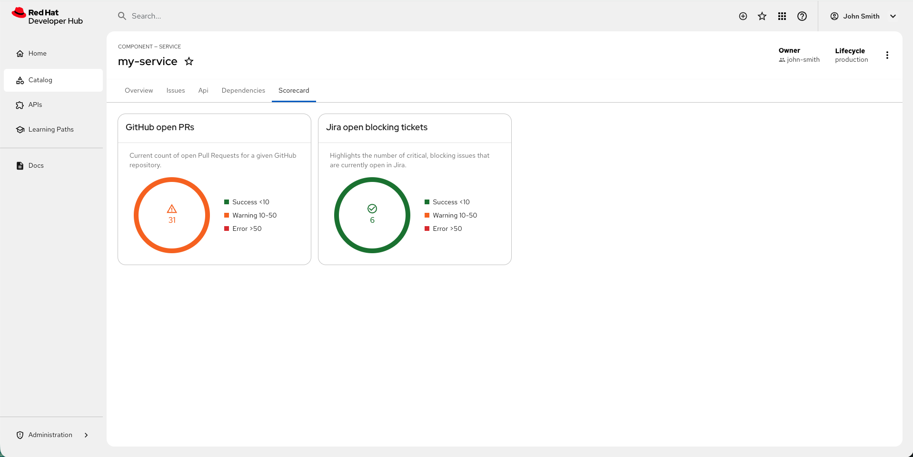

Evaluate project health using Scorecards
Setting up, configuring, and managing customizable Project Health Scorecards
Abstract
- Preface
- 1. Component health and compliance monitoring using Scorecards
- 2. How DORA metrics measure delivery performance
- 3. Composite metric providers
- 4. Access control for DORA metrics
- 5. Supported Scorecard metric providers
- 6. Set up Scorecards to monitor your project health
- 7. Install and configure Scorecards to view metrics
- 7.1. Integrate GitHub health metrics
- 7.2. Integrate Jira health metrics
- 7.3. Integrate OpenSSF security metrics by using Scorecards
- 7.4. Install and configure the DORA backend module
- 7.5. Configure GitHub DORA datasource
- 7.6. Configure Jira DORA datasource
- 7.7. Configure file-level checks to verify repositories contain required compliance documentation
- 7.8. Disable specific scorecard metrics per entity
- 7.9. Disable scorecard metrics globally
- 8. Scorecard metric thresholds
- 8.1. Metric categorization criteria
- 8.2. Threshold expression syntax
- 8.3. Resolve configuration conflicts using threshold precedence
- 8.4. Standardize metric thresholds across components
- 8.5. Component-specific threshold rules
- 8.6. Logical flow verification
- 8.7. Configure custom severity levels and colors for Scorecard
- 8.8. Scorecard color and icon configuration formats
- 9. Configure DORA metric thresholds
- 10. Monitor component health
- 11. Monitor collective health across components
- 11.1. Monitor portfolio health with aggregated KPIs
- 11.2. Aggregated KPIs in the scorecard
- 11.3. Configure aggregated KPIs for the scorecard
- 11.4. View detailed metrics from aggregated scorecard KPIs
- 11.5. Schedule metrics
- 11.6. Adjust metric retention
- 11.7. Establish ownership in the software catalog
- 11.8. View aggregated metrics for owned entities
- 11.9. Available metric data for entities
- 11.10. Scorecard card configuration parameters
- 11.11. API endpoints and parameter details
- 12. DORA metric trends visualization
- 13. DORA metric calculation logic
- 14. Configure scorecard cards on the homepage
- 15. TimeSeries REST API for Scorecard
- 16. Collectors metadata REST API
Preface
Visualize component health and compliance by monitoring KPIs from GitHub and Jira. Measure software delivery performance using DORA metrics for deployment frequency, lead time, change failure rate, and time to restore service.
Chapter 1. Component health and compliance monitoring using Scorecards
This section describes Developer Preview features in the Scorecard plugin. Developer Preview features are not supported by Red Hat in any way and are not functionally complete or production-ready. Do not use Developer Preview features for production or business-critical workloads. Developer Preview features provide early access to functionality in advance of possible inclusion in a Red Hat product offering. Customers can use these features to test functionality and provide feedback during the development process. Developer Preview features might not have any documentation, are subject to change or removal at any time, and have received limited testing. Red Hat might provide ways to submit feedback on Developer Preview features without an associated SLA.
For more information about the support scope of Red Hat Developer Preview features, see Developer Preview Support Scope.
Use the Scorecard plugin to achieve the following goals:
- Identify and prioritize risks: Use unified health data to make faster remediation decisions.
- Maintain security standards: Automatically surface compliance gaps to enforce best practices.
- Streamline workflows: Access all metrics in RHDH to reduce development overhead.
- Standardize service quality: Define and measure consistent health criteria across the organization.

Chapter 2. How DORA metrics measure delivery performance
DORA metrics measure software delivery performance using four indicators. The Scorecard plugin collects DORA data from GitHub and Jira to track deployment frequency, lead time, change failure rate, and time to restore service.
DevOps Research and Assessment (DORA) metrics provide objective measurements of software delivery performance. Research shows that teams with high DORA scores deliver software faster and more reliably than teams with low scores. The Scorecard plugin automates DORA metric collection, eliminating manual data aggregation and providing continuous visibility into delivery performance.
The four DORA metrics measure different aspects of delivery performance:
- Deployment frequency
- How often you successfully deploy code to production. High-performing teams deploy multiple times per day, while low-performing teams deploy less frequently.
- Lead time for changes
- How long it takes code changes to go from commit to production. Elite performers measure lead time in hours, while lower performers measure in weeks or months.
- Change failure rate
- What percentage of deployments cause failures that require remediation. Elite teams maintain change failure rates below 15%, while lower performers experience higher rates.
- Time to restore service
- How quickly you recover from production incidents. Elite teams restore service in under one hour, while lower performers can take days or weeks.
DORA metrics in the Scorecard plugin differ from standalone DORA tools by integrating directly with catalog entities, enabling you to measure delivery performance at the component level. The plugin automatically maps GitHub repositories and Jira projects to components in your catalog, eliminating the need to maintain separate tool configurations.
2.1. Data sources for DORA metrics
The Scorecard plugin collects DORA metric data from GitHub and Jira:
- GitHub provides deployment events, pull request data, and commit history for calculating deployment frequency and lead time for changes.
- Jira provides incident tracking and issue resolution data for calculating change failure rate and time to restore service.
Composite metric providers combine data from both sources to calculate metrics like change failure rate, which requires both deployment data from GitHub and incident data from Jira.
2.2. Performance benchmarks
The DORA research program categorizes teams into four performance levels:
| Performance level | Deployment frequency | Lead time for changes | Change failure rate | Time to restore service |
|---|---|---|---|---|
|
Elite |
On-demand (multiple deploys per day) |
Less than one hour |
0-15% |
Less than one hour |
|
High |
Between once per day and once per week |
Between one day and one week |
16-30% |
Less than one day |
|
Medium |
Between once per week and once per month |
Between one week and one month |
16-30% |
Less than one week |
|
Low |
Less than once per month |
More than one month |
16-30% |
More than one week |
Use these benchmarks to understand your current performance level and set improvement targets. Teams typically improve DORA metrics by investing in deployment automation, continuous integration, incident response processes, and code review practices.
Additional resources
Chapter 3. Composite metric providers
Composite metric providers aggregate data from multiple sources to calculate metrics that require information from more than one system. The Scorecard plugin uses composite providers to calculate DORA metrics that combine deployment data from GitHub with incident data from Jira.
Standard Scorecard metric providers collect data from a single source. For example, the GitHub provider collects pull request metrics, and the Jira provider collects issue counts. Each provider operates independently and calculates metrics based on data from its own source.
Composite metric providers extend this model by orchestrating data collection from multiple providers and combining the results. The DORA backend module implements composite providers to calculate metrics that require cross-system correlation.
3.1. How composite providers work
The Scorecard backend module coordinates data collection through these steps:
- The DORA backend module registers composite metric providers for each DORA metric.
- When a metric calculation is requested, the composite provider identifies which data sources are needed.
- The provider fetches data from each source (for example, GitHub deployments and Jira incidents).
- The provider applies the metric calculation formula using data from all sources.
- The result is stored in the time-series database for historical tracking.
For example, the change failure rate composite provider:
- Fetches deployment events from GitHub to identify when deployments occurred.
- Fetches incident data from Jira to identify which incidents were caused by deployments.
- Correlates deployments with incidents based on timestamps and component mappings.
- Calculates the percentage of deployments that resulted in incidents.
3.2. When to use composite providers
Use composite providers when a metric requires data from multiple systems:
- Change failure rate: Requires deployment data from GitHub and incident data from Jira.
- Custom compliance metrics: May require data from GitHub (code analysis), Jira (issue tracking), and security scanning tools.
Use standard single-source providers when a metric requires data from only one system:
- Deployment frequency: Requires only GitHub deployment events.
- Open pull requests: Requires only GitHub pull request data.
- Open issues: Requires only Jira issue data.
3.3. Architectural considerations
Composite providers introduce dependencies between data sources. If one source is unavailable or misconfigured, the composite metric may fail to calculate. The DORA backend module handles these scenarios by:
- Logging errors when a data source fails to respond.
- Returning partial results when possible (for example, calculating lead time from GitHub data even if Jira is unavailable).
- Exposing collector metadata through the REST API for troubleshooting.
Plan data source availability requirements when configuring composite metrics in production environments.
Additional resources
Chapter 4. Access control for DORA metrics
DORA metrics can reveal sensitive information about team performance and organizational delivery capabilities. Use RHDH role-based access control (RBAC) to restrict which users can view DORA metrics at component, portfolio, and API levels.
DORA metrics provide visibility into software delivery performance, but they can also expose information that organizations consider sensitive, including:
- Change failure rates that might reflect negatively on specific teams
- Time to restore service metrics that reveal incident response capabilities
- Deployment frequency patterns that indicate team velocity
- Lead time measurements that could be used for performance evaluation
Organizations often require different access levels for DORA metrics compared to other Scorecard data. For example, developers might view health and compliance metrics for their own components, but only engineering leadership should see aggregated DORA metrics across the entire organization.
4.1. RBAC policy structure for DORA metrics
RHDH RBAC policies control access to Scorecard DORA metrics through permission rules. You can restrict access at three levels:
- Component-level access
- Control who can view DORA metrics on individual component Scorecard pages. Use this to limit metrics visibility to component owners and their managers.
- Portfolio-level access
- Control who can view DORA aggregation cards on the homepage. Use this to restrict organization-wide performance visibility to leadership and platform engineering teams.
- API-level access
- Control who can query DORA metrics through the TimeSeries and Collectors metadata APIs. Use this to prevent unauthorized programmatic access to delivery performance data.
4.2. Permission types for DORA metrics
The Scorecard plugin provides these permission types for DORA metrics:
scorecard.dora.metric.read- Allows reading DORA metric values for catalog entities the user can access. Without this permission, DORA metrics do not appear on component Scorecard pages.
scorecard.dora.aggregation.read- Allows viewing portfolio-level DORA aggregation cards on the homepage. Without this permission, DORA homepage cards are hidden even if configured.
scorecard.dora.timeseries.read- Allows querying the TimeSeries API for historical DORA metric data. Without this permission, API requests return 403 Forbidden.
scorecard.dora.collectors.read- Allows querying the Collectors metadata API for DORA data source health. Without this permission, troubleshooting DORA data collection requires administrator assistance.
4.3. Default access behavior
By default, all authenticated users can view DORA metrics if they have access to the underlying catalog entities. This matches the behavior of other Scorecard metrics like GitHub open pull requests or Jira open issues.
If your organization considers DORA metrics sensitive, you must explicitly configure RBAC policies to restrict access. Without RBAC configuration, any user who can view a component in the catalog can also see its DORA metrics.
4.4. Common RBAC scenarios
- Restrict DORA metrics to component owners and managers
-
Allow developers to see DORA metrics only for components they own. Use catalog entity ownership metadata combined with
scorecard.dora.metric.readpermission. - Leadership-only portfolio visibility
-
Hide DORA aggregation cards from the homepage for all users except engineering leadership. Use role-based policies with
scorecard.dora.aggregation.readpermission tied to leadership groups. - Platform engineering troubleshooting access
-
Grant platform engineering teams access to the Collectors metadata API for monitoring DORA data source health. Use
scorecard.dora.collectors.readpermission for the platform engineering role. - Read-only external reporting
-
Provide business intelligence systems with read-only API access to DORA metrics for executive dashboards. Use service account credentials with
scorecard.dora.timeseries.readpermission.
4.5. RBAC interaction with catalog visibility
RBAC policies for DORA metrics work in combination with catalog entity visibility rules. A user must satisfy both conditions to view DORA metrics:
- The user must have permission to view the catalog entity (component, system, or resource).
-
The user must have the appropriate
scorecard.dora.*permission.
If a user lacks catalog visibility for a component, RBAC policies for DORA metrics do not apply because the component itself is not visible. Conversely, if a user can view a component but lacks DORA permissions, they see the component Scorecard page without DORA metrics.
This layered approach ensures that RBAC policies cannot accidentally grant access to components a user should not see.
Chapter 5. Supported Scorecard metric providers
The Scorecard plugin gathers data from third-party systems through metric providers. Use the following table to identify which metrics are available for each supported provider.
| Provider | Metric ID | Title | Description | Type | Unit |
|---|---|---|---|---|---|
|
DORA |
|
Deployment Frequency |
Number of deployments per day (GitHub datasource). |
number |
deployments/day |
|
DORA |
|
Lead Time for Changes |
Time from first commit to production deployment (GitHub datasource). |
duration |
hours |
|
DORA |
|
Change Failure Rate |
Percentage of deployments causing failures (GitHub + Jira datasources). |
percentage |
% |
|
DORA |
|
Time to Restore Service |
Mean time to resolve incidents (Jira datasource). |
duration |
hours |
|
GitHub |
|
GitHub open PRs |
Number of open pull requests in GitHub. |
number |
count |
|
Jira |
|
Jira open issues |
Number of open issues in Jira. |
number |
count |
|
OpenSSF |
|
Binary Artifacts |
Determines if the project has generated executable (binary) artifacts in the source repository. |
score (0-10) |
score |
|
OpenSSF |
|
Branch Protection |
Determines if the default and release branches are protected with branch protection settings. |
score (0-10) |
score |
|
OpenSSF |
|
CII Best Practices |
Determines if the project has an OpenSSF (formerly CII) Best Practices Badge. |
score (0-10) |
score |
|
OpenSSF |
|
CI Tests |
Determines if the project runs tests before pull requests are merged. |
score (0-10) |
score |
|
OpenSSF |
|
Code Review |
Determines if the project requires human code review before pull requests are merged. |
score (0-10) |
score |
|
OpenSSF |
|
Contributors |
Determines if the project has a set of contributors from multiple organizations. |
score (0-10) |
score |
|
OpenSSF |
|
Dangerous Workflow |
Determines if the project’s GitHub Action workflows avoid dangerous patterns. |
score (0-10) |
score |
|
OpenSSF |
|
Dependency Update Tool |
Determines if the project uses a dependency update tool. |
score (0-10) |
score |
|
OpenSSF |
|
Fuzzing |
Determines if the project uses fuzzing. |
score (0-10) |
score |
|
OpenSSF |
|
License |
Determines if the project has defined a license. |
score (0-10) |
score |
|
OpenSSF |
|
Maintained |
Determines if the project is actively maintained. |
score (0-10) |
score |
|
OpenSSF |
|
Packaging |
Determines if the project is published as a package. |
score (0-10) |
score |
|
OpenSSF |
|
Pinned Dependencies |
Determines if the project has declared and pinned the dependencies of its build process. |
score (0-10) |
score |
|
OpenSSF |
|
SAST (Static Analysis Security Testing) |
Determines if the project uses static code analysis. |
score (0-10) |
score |
|
OpenSSF |
|
Security Policy |
Determines if the project has published a security policy. |
score (0-10) |
score |
|
OpenSSF |
|
Signed Releases |
Determines if the project cryptographically signs release artifacts. |
score (0-10) |
score |
|
OpenSSF |
|
Token Permissions |
Determines if the project’s workflows follow the principle of least privilege. |
score (0-10) |
score |
|
OpenSSF |
|
Vulnerabilities |
Determines if the project has open, known unfixed vulnerabilities. |
score (0-10) |
score |
|
Filecheck |
|
<key> |
Verifies that the configured file exists in the repository. The metric ID suffix and title are derived from the key you define in |
boolean |
boolean |
For information about customizing metric thresholds, see Scorecard metric thresholds.
Chapter 6. Set up Scorecards to monitor your project health
You can set up and configure Scorecards so you can track key metrics and quickly understand the health of your projects in Red Hat Developer Hub.
6.1. Enable Scorecards
To monitor component health and quality in RHDH, you must enable the Scorecard plugin in your configuration.
Prerequisites
Procedure
Add the following configuration in your RHDH
dynamic-plugin-config.yamlfile:plugins: - package: oci://ghcr.io/redhat-developer/rhdh-plugin-export-overlays/red-hat-developer-hub-backstage-plugin-scorecard:<tag> disabled: false pluginConfig: dynamicPlugins: frontend: red-hat-developer-hub.backstage-plugin-scorecard: entityTabs: - path: '/scorecard' title: Scorecard mountPoint: entity.page.scorecard mountPoints: - mountPoint: entity.page.scorecard/cards importName: EntityScorecardContent config: layout: gridColumn: 1 / -1 if: allOf: - isKind: component - package: oci://ghcr.io/redhat-developer/rhdh-plugin-export-overlays/red-hat-developer-hub-backstage-plugin-scorecard-backend:<tag> disabled: falsewhere:
<tag>Enter your RHDH version of Backstage and the plugin version, in the format
bs_<backstage-version>__<plugin-version>(note the double underscore delimiter). To find these versions, complete the following steps:- Find your Backstage version in the RHDH release notes preface.
Locate the plugin version in the Dynamic Plugins Reference guide. For example, for RHDH 1.9 based on Backstage 1.45.3, use the format
bs_1.45.3__<plugin-version>.TipTo ensure environment stability, use a SHA256 digest instead of a version tag. See Determining SHA256 Digests.
6.2. Configure RBAC by using the CSV file
You can grant read access to Scorecard metrics by adding permission policies to your role-based access control (RBAC) comma-separated values (CSV) file.
Prerequisites
- You have enabled RBAC and assigned a policy administrator role.
-
You have added
scorecardto the list of authorized plugins under yourpermission.rbac.pluginsWithPermissionconfiguration.
Procedure
Add the following policy to your CSV file so that users can view metrics:
g, user:default/<YOUR_USERNAME>, role:default/scorecard-viewer p, role:default/scorecard-viewer, scorecard.metric.read, read, allow p, role:default/scorecard-viewer, catalog.entity.read, read, allow
Optional: Restrict access to specific metrics by defining a conditional policy in the
rbac-conditional-policies.yamlfile as described in Defining conditional policies:result: CONDITIONAL roleEntityRef: "role:default/scorecard-viewer" pluginId: scorecard resourceType: scorecard-metric permissionMapping: - read conditions: rule: HAS_METRIC_ID resourceType: scorecard-metric params: metricIds: [<your_metric_id>]where:
metricIdsEnter the metric ID for user access, such as
github.openPRs.With this policy, users can read only the specified metrics. Access to all other metrics is restricted.
Verification
- Verify that the user can view Scorecard metrics in RHDH.
6.3. Configure RBAC using the Web UI
You can grant read access to Scorecard metrics by using the RBAC Web UI in RHDH.
Prerequisites
- You have added a custom Developer Hub application configuration.
-
You have added
scorecardto the list of authorized plugins under yourpermission.rbac.pluginsWithPermissionconfiguration.
Procedure
- In the Red Hat Developer Hub navigation menu, go to Administration > RBAC.
- Select or create the Role for Scorecard access.
- In the Add permission policies section, select Scorecard from the plugins list.
Expand the Scorecard entry, select policy with the following details, and click Next:
-
Name:
scorecard.metric.read Permission:
read
-
Name:
Optional: Restrict access to specific metrics:
In the Add permission policies step, select the following:
-
Name:
scorecard.metrics.read -
Permission:
Read
-
Name:
- Click Use advanced customized permissions to allow access to specific parts of the selected resource type under Actions.
-
Select the
HAS_METRIC_IDrule and specify the plugin IDs, using commas to separate multiple IDs.
Verification
- Verify that the user can view Scorecard metrics in RHDH.
Chapter 7. Install and configure Scorecards to view metrics
You can install and configure GitHub, Jira, and OpenSSF Scorecards to display metrics and visual health status for software components in the RHDH catalog. You can also install the DORA backend module to measure software delivery performance by using DORA metrics.
7.1. Integrate GitHub health metrics
You can configure the GitHub Scorecard plugin to display repository metrics in your RHDH catalog. With this integration, you can monitor component health and security risks directly from Red Hat Developer Hub.
You can grant RHDH access to the GitHub API by using a GitHub App or a GitHub token.
For long-lived integrations or organizational access, you must use a GitHub App.
Prerequisites
- You have installed your RHDH instance.
- You have installed the Scorecard images.
- Optional: If you choose the GitHub App option, you must have permissions in GitHub to create and manage a GitHub App.
- You have added a custom Developer Hub application configuration.
Procedure
Grant GitHub API access: Create one of the following authentication methods:
Configure by using a GitHub App.
Create a GitHub App with the required permissions (Read-only for Contents to allow reading repositories).
NoteYou must install the GitHub App on the organization (or user account) that owns repositories you want access to, granting it the necessary repository access permissions.
- In the General > Clients secrets section, click Generate a new client secret.
- In the General > Private keys section, click Generate a private key.
- In the Install App tab, select an account to install your GitHub App on.
- Record the App ID, Client ID, Client Secret, and Private key values.
Add secrets to RHDH by adding the following key/value pairs to your RHDH secrets. You can use these secrets in the RHDH configuration files by using the corresponding environment variable name for each secret.
-
GITHUB_INTEGRATION_APP_ID:: The saved App ID. -
GITHUB_INTEGRATION_CLIENT_ID:: The saved Client ID. -
GITHUB_INTEGRATION_CLIENT_SECRET:: The saved Client Secret. -
GITHUB_INTEGRATION_HOST_DOMAIN:: The GitHub host domain:github.com. -
GITHUB_INTEGRATION_ORGANIZATION:: Your GitHub organization name, such as<your_github_organization_name>. -
GITHUB_INTEGRATION_PRIVATE_KEY_FILE:: The saved Private key content.
-
Configure the GitHub integration in your RHDH
app-config.yamlfile by adding the authentication details to theintegrations.githubsection:integrations: github: - host: ${GITHUB_INTEGRATION_HOST_DOMAIN} apps: - appId: ${GITHUB_INTEGRATION_APP_ID} clientId: ${GITHUB_INTEGRATION_CLIENT_ID} clientSecret: ${GITHUB_INTEGRATION_CLIENT_SECRET} privateKey: | ${GITHUB_INTEGRATION_PRIVATE_KEY_FILE}
Configure by using a GitHub token.
Create a GitHub token with the following permissions:
-
Classic Personal Access Token (PAT): Select the
reposcope for read/write access to private repositories. Fine-Grained Personal Access Token (PAT):
- Choose the specific repositories that RHDH must access.
- Grant the token a Read permission for Contents.
-
Classic Personal Access Token (PAT): Select the
Add the token to RHDH secrets by adding the following key/value pair to your RHDH secrets.
where:
GITHUB_TOKEN- The generated GitHub token.
Configure the GitHub integration in your RHDH
app-config.yamlfile by adding the authentication details to theintegrations.githubsection:integrations: github: - host: github.com token: ${GITHUB_TOKEN}
Enable the GitHub Scorecard plugin: Add the GitHub Scorecard module to your RHDH
dynamic-plugins-config.yamlfile:plugins: - package: oci://ghcr.io/redhat-developer/rhdh-plugin-export-overlays/red-hat-developer-hub-backstage-plugin-scorecard-backend-module-github:<tag> disabled: falsewhere:
<tag>-
Enter your RHDH version of Backstage and the plugin version, in the format
bs_<backstage-version>__<plugin-version>(note the double underscore delimiter). To find these versions, complete the following steps:
- Find your Backstage version in the RHDH release notes preface.
Locate the plugin version in the Dynamic Plugins Reference guide. For example, for RHDH 1.9 based on Backstage 1.45.3, use the format
bs_1.45.3__<plugin-version>.TipTo ensure environment stability, use a SHA256 digest instead of a version tag. See Determining SHA256 Digests.
Annotate catalog entities: Link a component to the GitHub data source by editing the
catalog-info.yamlfile for your RHDH entity and adding the required annotations as shown in the following code:apiVersion: backstage.io/v1alpha1 kind: Component metadata: name: my-service annotations: # Required: GitHub project slug in format "owner/repository" github.com/project-slug: myorg/my-service # Required: Entity source location backstage.io/source-location: url:https://github.com/myorg/my-service spec: type: service lifecycle: production owner: _<your_team_name>_where:
annotations:github.com/project-slug-
The GitHub repository format, for example,
owner/repository. annotations:backstage.io/source-location-
The entity source location format, for example,
url:https://github.com/owner/repository. spec:ownerYour team name.
NoteYou must add the team entity to the Catalog to ensure the provided permissions are applicable.
Import the catalog entity: Add the location of your
catalog-info.yamlto thecatalog.locationssection in your RHDHapp-config.yamlfile:catalog: locations: - type: url target: https://github.com/<owner>/<repository>/catalog-info.yamlOptional: Customize thresholds: Define custom roles for the GitHub Open Pull Requests (
github.openPRs) metric in your RHDHapp-config.yamlfile:scorecard: plugins: github: openPRs: thresholds: rules: - key: success expression: '<10' - key: warning expression: '10-50' - key: error expression: '>50'where:
scorecard:plugins:github:openPRs:thresholdsLists the default threshold values for the GitHub open pull requests (PRs) metric.
NoteGitHub metrics use the following default thresholds for the GitHub Open Pull Requests (
github.openPRs) metric:- Error: More than 50 open pull requests.
- Warning: Between 10 and 50 open pull requests.
- Success: Fewer than 10 open pull requests.
You can customize these thresholds in your RHDH
app-config.yamlfile. For more information, see Scorecard metric thresholds.
7.2. Integrate Jira health metrics
You can configure the Jira Scorecard plugin to display project tracking and delivery velocity data in your RHDH instance. This integration centralizes development status and facilitates the evaluation of component readiness.
The plugin supports Jira Cloud (API v3) and Jira Data Center (API v2).
Prerequisites
- You must have administrator privileges for Jira and RHDH.
- You have installed your RHDH instance.
- You have installed the Scorecard images.
- You have added a custom Developer Hub application configuration.
Procedure
Generate a Jira configuration token by using one of the following methods, depending on your Jira product:
Jira Cloud: Create a personal token. You must create a
Base64-encodedstring by using the following plain text format:your-atlassian-email:your-jira-api-token.$ echo -n 'your-atlassian-email:your-jira-api-token' | base64
- Jira data center: Create a Personal Access Token (PAT) in your Jira data center account.
Add Jira secrets: Define the following key/value pairs in your RHDH secrets:
JIRA_TOKEN- Enter your generated Jira token.
JIRA_BASE_URL- Enter your Jira base URL.
Configure the plugin: In your RHDH
dynamic-plugins-config.yamlfile, enable the plugin by using either a direct setup or a proxy setup.NoteYou must use the proxy setup to ensure configuration compatibility if you also use the Roadie Jira Frontend Plugin.
Use a direct setup:
Add the following code to your RHDH
dynamic-plugins-config.yamlfile:plugins: - package: oci://ghcr.io/redhat-developer/rhdh-plugin-export-overlays/red-hat-developer-hub-backstage-plugin-scorecard-backend-module-jira:<tag> disabled: falsewhere:
<tag>-
Enter your RHDH version of Backstage and the plugin version, in the format
bs_<backstage-version>__<plugin-version>(note the double underscore delimiter). To find these versions, complete the following steps:
- Find your Backstage version in the RHDH release notes preface.
Locate the plugin version in the Dynamic Plugins Reference guide. For example, for RHDH 1.9 based on Backstage 1.45.3, use the format
bs_1.45.3__<plugin-version>.TipTo ensure environment stability, use a SHA256 digest instead of a version tag. See Determining SHA256 Digests.
In your RHDH
app-config.yamlfile, add the following direct setup settings:jira: baseUrl: ${JIRA_BASE_URL} token: ${JIRA_TOKEN} product: _<jira_product>_where:
baseUrl- The base URL of your Jira instance, configured under ${JIRA_BASE_URL} in your RHDH secrets.
token- The Jira token (Base64 string for Cloud, PAT for Data Center), configured under ${JIRA_TOKEN} in your RHDH secrets.
productEnter the supported product:
cloudordatacenter.- Use a proxy setup:
In your RHDH
dynamic-plugins-config.yamlfile, add the following code:plugins: - package: oci://ghcr.io/redhat-developer/rhdh-plugin-export-overlays/red-hat-developer-hub-backstage-plugin-scorecard-backend-module-jira:<tag> disabled: falsewhere:
<tag>-
Enter your RHDH version of Backstage and the plugin version, in the format
bs_<backstage-version>__<plugin-version>(note the double underscore delimiter). To find these versions, complete the following steps:
- Find your Backstage version in the RHDH release notes preface.
Locate the plugin version in the Dynamic Plugins Reference guide. For example, for RHDH 1.9 based on Backstage 1.45.3, use the format
bs_1.45.3__<plugin-version>.TipTo ensure environment stability, use a SHA256 digest instead of a version tag. See Determining SHA256 Digests.
In your RHDH
app-config.yamlfile, add the following proxy settings:proxy: endpoints: '/jira/api': target: ${JIRA_BASE_URL} headers: Accept: 'application/json' Content-Type: 'application/json' X-Atlassian-Token: 'no-check' Authorization: ${JIRA_TOKEN} # Must be configured in your environment jira: proxyPath: /jira/api product: cloud # Change to 'datacenter' if using Jira Datacenterwhere:
target- The base URL of your Jira instance, configured under ${JIRA_BASE_URL} in your RHDH secrets.
AuthorizationThe Jira token, configured under ${JIRA_TOKEN} in your RHDH secrets. Set the token value as one of the following values:
-
For Cloud:
Basic YourCreatedCloudToken -
For Data Center:
Bearer YourJiraToken
-
For Cloud:
Annotate catalog entities: Add the Jira project key to the
metadata.annotationssection of thecatalog-info.yamlfile for your component:apiVersion: backstage.io/v1alpha1 kind: Component metadata: name: my-service annotations: jira/project-key: PROJECT jira/component: Component jira/label: UI jira/team: 9d3ea319-fb5b-4621-9dab-05fe502283e jira/custom-filter: 'reporter = "user@example.com" AND resolution is not EMPTY' spec: type: website lifecycle: experimental owner: guests system: examples providesApis: [example-grpc-api]where:
jira/project-key- Required: Enter the Jira project key.
jira/component- Optional: Enter the Jira component name.
jira/label- Optional: Enter the Jira label.
jira/team- Optional: Enter the Jira team ID (not the team title).
jira/custom-filter- Optional: Enter a custom Jira Query Language (JQL) filter.
Import the catalog entity: Add the location of your
catalog-info.yamlto thecatalog.locationssection in the RHDHapp-config.yamlfile:catalog: locations: - type: url target: https://github.com/<owner>/<repository>/catalog-info.yamlOptional: Define metric thresholds and filters: To customize health criteria or filter issues, add the Jira Open Issues metric thresholds to your RHDH
app-config.yamlfile:scorecard: plugins: jira: openIssues: thresholds: rules: - key: success expression: '<=50' - key: warning expression: '>50' - key: error expression: '>100'where:
scorecard:plugins:jira:openIssues:thresholds- Lists the default threshold values for the Jira Open Issues metric.
Optional: Define global or custom mandatory filters that entities can override by adding the following code to your RHDH
app-config.yamlfile:scorecard: plugins: jira: openIssues: options: mandatoryFilter: Type = Task AND Resolution = Unresolved customFilter: priority in ("Critical", "Blocker")where:
mandatoryFilter-
Optional: Replaces the default filter (
type = Bug and resolution = Unresolved). customFilterOptional: Specifies a global custom filter. The entity annotation
jira/custom-filteroverrides this value.NoteJira metrics use the following default thresholds for the Jira Open Issues (
jira.openIssues) metric:- Error: More than 100 open issues.
- Warning: More than 50 open issues.
- Success: 50 or fewer open issues.
You can customize these thresholds in your RHDH
app-config.yamlfile. For more information, see Scorecard metric thresholds.
7.3. Integrate OpenSSF security metrics by using Scorecards
This section describes Developer Preview features in the Scorecard plugin. Developer Preview features are not supported by Red Hat in any way and are not functionally complete or production-ready. Do not use Developer Preview features for production or business-critical workloads. Developer Preview features provide early access to functionality in advance of possible inclusion in a Red Hat product offering. Customers can use these features to test functionality and provide feedback during the development process. Developer Preview features might not have any documentation, are subject to change or removal at any time, and have received limited testing. Red Hat might provide ways to submit feedback on Developer Preview features without an associated SLA.
For more information about the support scope of Red Hat Developer Preview features, see Developer Preview Support Scope.
You can configure the OpenSSF Scorecard module to display security and compliance metrics from the OpenSSF Scorecard project in your RHDH catalog.
By default, the module fetches data from the public OpenSSF Scorecard API, which requires no authentication and supports public GitHub repositories. Alternatively, the annotation can point to any HTTPS endpoint that serves OpenSSF Scorecard JSON data, such as a self-hosted instance or a static file.
Prerequisites
- You have installed your RHDH instance.
- You have set up the Scorecard plugin.
- You have added a custom Developer Hub application configuration.
- The target repositories are publicly accessible on GitHub, or you have an alternative HTTPS endpoint that serves OpenSSF Scorecard JSON data.
Procedure
Enable the OpenSSF Scorecard module: Add the following configuration to your RHDH
dynamic-plugins-config.yamlfile:plugins: - package: oci://ghcr.io/redhat-developer/rhdh-plugin-export-overlays/red-hat-developer-hub-backstage-plugin-scorecard-backend-module-openssf:<tag> disabled: falsewhere:
<tag>-
Enter your RHDH version of Backstage and the plugin version, in the format
bs_<backstage-version>__<plugin-version>(note the double underscore delimiter). To find these versions, complete the following steps:
- Find your Backstage version in the RHDH release notes preface.
Locate the plugin version in the Dynamic Plugins Reference guide. For example, for RHDH 1.9 based on Backstage 1.45.3, use the format
bs_1.45.3__<plugin-version>.TipTo ensure environment stability, use a SHA256 digest instead of a version tag. See Determining SHA256 Digests.
Annotate catalog entities: Link a component to the OpenSSF Scorecard data source by editing the
catalog-info.yamlfile for your RHDH entity and adding the required annotation as shown in the following code:apiVersion: backstage.io/v1alpha1 kind: Component metadata: name: my-service annotations: openssf/scorecard-location: https://api.securityscorecards.dev/projects/github.com/_<owner>_/_<repository>_ spec: type: service lifecycle: production owner: _<your_team_name>_where:
annotations:openssf/scorecard-location-
Specifies the full URL to the OpenSSF Scorecard API endpoint for the repository. The URL must start with
https://. spec:ownerSpecifies your team name.
NoteFor organizations running a self-hosted OpenSSF Scorecard instance, replace
api.securityscorecards.devwith the URL of your instance.
Ingest the catalog entity: Add the location of your
catalog-info.yamlto thecatalog.locationssection in your RHDHapp-config.yamlfile:catalog: locations: - type: url target: https://github.com/<owner>/<repository>/catalog-info.yaml
OpenSSF metrics use the following default thresholds:
- Error: Score below 2.
- Warning: Score between 2 and 7.
- Success: Score above 7.
You can customize these thresholds in your RHDH app-config.yaml file. For more information, see Scorecard metric thresholds.
7.4. Install and configure the DORA backend module
To enable DORA metrics calculation and time-series storage, you must install the scorecard-backend-module-dora plugin and configure database access for metric history.
Prerequisites
- You have enabled the Scorecard plugin.
- You have configured GitHub and Jira integrations in your RHDH instance.
- You have access to a PostgreSQL database for storing time-series metric data.
Procedure
Add the DORA backend module to your
dynamic-plugin-config.yamlfile:plugins: - package: oci://ghcr.io/redhat-developer/rhdh-plugin-export-overlays/red-hat-developer-hub-backstage-plugin-scorecard-backend-module-dora:<tag> disabled: falsewhere:
<tag>-
Enter your RHDH version of Backstage and the plugin version, in the format
bs_<backstage-version>__<plugin-version>(note the double underscore delimiter). To find these versions, complete the following steps:
- Find your Backstage version in the RHDH release notes preface.
Locate the plugin version in the Dynamic Plugins Reference guide. For example, for RHDH 1.9 based on Backstage 1.45.3, use the format
bs_1.45.3__<plugin-version>.TipTo ensure environment stability, use a SHA256 digest instead of a version tag. See Determining SHA256 Digests.
Configure database connection parameters in your
app-config.yamlfile:backend: database: client: pg connection: host: <database_host> port: 5432 user: <database_user> password: <database_password> database: <database_name> scorecard: dora: database: retentionDays: 90 collectionInterval: 3600Where:
<database_host>- The hostname or IP address of your PostgreSQL database server.
<database_user>- The database user with permissions to create tables and write data.
<database_password>- The password for the database user.
<database_name>- The name of the database for storing DORA metrics.
retentionDays-
The number of days to retain metric history. The default value is
90. collectionInterval-
The interval in seconds between metric collection cycles. The default value is
3600(1 hour).
- Restart your RHDH instance to load the DORA backend module.
Verification
Check the RHDH logs to confirm the DORA backend module loaded successfully:
$ oc logs <rhdh_pod_name> | grep "scorecard-backend-module-dora"
You should see log entries indicating the module registered successfully and database tables were created.
Verify the database schema was created:
$ psql -h <database_host> -U <database_user> -d <database_name> -c "\dt scorecard*"
You should see tables for DORA metric storage including
scorecard_dora_metricsandscorecard_dora_events.
Troubleshooting
- If the DORA backend module fails to load, verify that the PostgreSQL database is accessible from your RHDH instance and that the connection parameters are correct.
- If database tables are not created, check that the database user has permissions to create tables and modify the schema.
7.5. Configure GitHub DORA datasource
To calculate deployment frequency and lead time for changes, you must configure GitHub as a DORA datasource to collect deployment events, pull requests, and commit history.
Prerequisites
- You have installed and configured the DORA backend module.
- You have configured GitHub integration with appropriate permissions to read deployment events and repository data.
Procedure
Add the GitHub DORA datasource to your
app-config.yamlfile:scorecard: dora: dataSources: github: enabled: true deploymentEvents: source: github_deployments pullRequests: enabled: trueWhere:
deploymentEvents.source-
Specifies how to identify deployments. Valid values are
github_deployments(GitHub deployment events API) orrelease_tags(GitHub release tags). pullRequests.enabled-
Enables pull request data collection for calculating lead time for changes. The default value is
true.
Define what constitutes a deployment for your organization by choosing one of the following options:
ImportantEvery organization defines a "production deployment" differently. The Scorecard plugin provides flexible configuration to match your deployment process, whether you use GitHub deployment events, release tags, specific branch merges, or custom patterns. Choose the option that accurately represents when code reaches production in your environment.
GitHub deployment events: Use GitHub’s deployment API to track when code is deployed to production. This option requires that your deployment workflows create GitHub deployment events.
scorecard: dora: dataSources: github: deploymentEvents: source: github_deployments environment: productionRelease tags: Use GitHub release tags as deployment markers. This option is useful when your deployment process does not create GitHub deployment events.
scorecard: dora: dataSources: github: deploymentEvents: source: release_tags tagPattern: "^v[0-9]+\\.[0-9]+\\.[0-9]+$"Where:
environment-
Filters deployment events to a specific environment. Use
productionto count only production deployments. tagPattern-
A regular expression matching release tag names. The example pattern matches semantic version tags like
v1.2.3.
Configure lead time calculation by specifying the starting point for measuring lead time:
scorecard: dora: dataSources: github: leadTime: startFrom: first_commitWhere:
leadTime.startFrom-
Specifies when to start measuring lead time. Valid values are
first_commit(time from first commit in a pull request to deployment) orpr_creation(time from pull request creation to deployment). The default value isfirst_commit.
Configure repository mapping to catalog components by adding annotations to your component
catalog-info.yamlfiles:apiVersion: backstage.io/v1alpha1 kind: Component metadata: name: my-service annotations: github.com/project-slug: my-org/my-repo scorecard.io/dora-enabled: "true" spec: type: service lifecycle: production owner: team-aWhere:
github.com/project-slug-
Links the component to a GitHub repository in the format
organization/repository. scorecard.io/dora-enabled- Enables DORA metric collection for this component.
- Restart your RHDH instance to apply the configuration changes.
Verification
- Navigate to a component page in your RHDH catalog and select the Scorecard tab.
Verify that deployment frequency and lead time metrics appear on the scorecard.
NoteDORA metrics may take up to one hour to appear after initial configuration, depending on your configured collection interval.
Check the DORA backend logs for GitHub data collection activity:
$ oc logs <rhdh_pod_name> | grep "GitHub DORA collector"
You should see log entries indicating successful GitHub API calls and deployment event processing.
Troubleshooting
- If deployment frequency shows zero, verify that your GitHub repository has deployment events or release tags matching your configuration.
- If lead time metrics do not appear, check that pull requests are being merged in your GitHub repository and that the GitHub integration has permissions to read pull request data.
- If you see rate limit errors in the logs, consider scheduling metrics collection to avoid API limits.
Additional resources
7.6. Configure Jira DORA datasource
To calculate change failure rate and time to restore service, you must configure Jira as a DORA datasource to collect incident tracking and issue resolution data.
Prerequisites
- You have installed and configured the DORA backend module.
- You have configured Jira integration with appropriate permissions to read issue data and status transitions.
Procedure
Add the Jira DORA datasource to your
app-config.yamlfile:scorecard: dora: dataSources: jira: enabled: true incidents: issueTypes: - Bug - Incident priorityFilter: - Critical - High resolution: statusMapping: resolved: - Done - Closed - Resolved in_progress: - In Progress - In ReviewWhere:
incidents.issueTypes- A list of Jira issue types that represent production failures or incidents. Customize this list based on your organization’s issue type configuration.
incidents.priorityFilter- Filters incidents to specific priority levels. Use this to count only high-severity failures in the change failure rate calculation.
resolution.statusMapping.resolved- A list of Jira statuses that indicate an incident is resolved.
resolution.statusMapping.in_progress- A list of Jira statuses that indicate an incident is being worked on.
Define what constitutes a failure for your organization by configuring issue type and label filters:
ImportantOrganizations define production incidents differently based on their incident management practices. The Scorecard plugin allows you to customize which Jira issue types, priorities, labels, and custom fields identify true production failures versus planned maintenance, known issues, or lower-severity bugs. Configure filters to ensure Change Failure Rate and Time to Restore Service metrics reflect only the incidents you want to measure.
scorecard: dora: dataSources: jira: incidents: issueTypes: - Bug labels: - production-incident customField: fieldName: Severity values: - Critical - HighWhere:
incidents.labels- Filters incidents to issues with specific labels. This is useful when your Jira project uses labels to tag production incidents.
customField.fieldName- Specifies a custom field to use for additional filtering.
customField.values- A list of custom field values that identify incidents.
Configure project mapping to catalog components by adding Jira project annotations to your component
catalog-info.yamlfiles:apiVersion: backstage.io/v1alpha1 kind: Component metadata: name: my-service annotations: jira/project-key: MYPROJ jira/component: my-service scorecard.io/dora-enabled: "true" spec: type: service lifecycle: production owner: team-aWhere:
jira/project-key- Links the component to a Jira project.
jira/component- Filters Jira issues to a specific component within the project. This field is optional.
Configure time to restore service calculation by specifying the time window for correlating incidents with deployments:
scorecard: dora: dataSources: jira: timeToRestore: correlationWindow: 86400Where:
correlationWindow-
The number of seconds after a deployment to look for related incidents. The default value is
86400(24 hours). Incidents created within this window after a deployment are considered related to that deployment.
- Restart your RHDH instance to apply the configuration changes.
Verification
- Navigate to a component page in your RHDH catalog and select the Scorecard tab.
Verify that change failure rate and time to restore service metrics appear on the scorecard.
NoteDORA metrics may take up to one hour to appear after initial configuration, depending on your configured collection interval.
Check the DORA backend logs for Jira data collection activity:
$ oc logs <rhdh_pod_name> | grep "Jira DORA collector"
You should see log entries indicating successful Jira API calls and incident data processing.
Troubleshooting
- If change failure rate shows zero, verify that your Jira project contains issues matching your configured issue types, priorities, or labels.
- If time to restore service metrics do not appear, check that incidents in your Jira project transition to resolved statuses that match your configuration.
- If you see authentication errors in the logs, verify that the Jira integration credentials have permissions to read issue data and status transitions.
Additional resources
7.7. Configure file-level checks to verify repositories contain required compliance documentation
This section describes Developer Preview features in the Scorecard plugin. Developer Preview features are not supported by Red Hat in any way and are not functionally complete or production-ready. Do not use Developer Preview features for production or business-critical workloads. Developer Preview features provide early access to functionality in advance of possible inclusion in a Red Hat product offering. Customers can use these features to test functionality and provide feedback during the development process. Developer Preview features might not have any documentation, are subject to change or removal at any time, and have received limited testing. Red Hat might provide ways to submit feedback on Developer Preview features without an associated SLA.
For more information about the support scope of Red Hat Developer Preview features, see Developer Preview Support Scope.
You can configure the Scorecard filecheck module to verify that repositories contain required files such as LICENSE, CODEOWNERS, CONTRIBUTING.md, or any file that you have configured. Each configured file generates a boolean metric that reports whether the file is present or missing.
Prerequisites
- You have installed your RHDH instance.
- You have set up the Scorecard plugin.
- You have added a custom Developer Hub application configuration.
-
Your catalog entities have the
backstage.io/source-locationannotation set. This annotation is usually added automatically during catalog ingestion.
Procedure
Enable the filecheck module: Add the following configuration to your RHDH
dynamic-plugins-config.yamlfile:plugins: - package: oci://ghcr.io/redhat-developer/rhdh-plugin-export-overlays/red-hat-developer-hub-backstage-plugin-scorecard-backend-module-filecheck:<tag> disabled: falsewhere:
<tag>-
Enter your RHDH version of Backstage and the plugin version, in the format
bs_<backstage-version>__<plugin-version>(note the double underscore delimiter). To find these versions, complete the following steps:
- Find your Backstage version in the RHDH release notes preface.
Locate the plugin version in the Dynamic Plugins Reference guide. For example, for RHDH 1.9 based on Backstage 1.45.3, use the format
bs_1.45.3__<plugin-version>.TipTo ensure environment stability, use a SHA256 digest instead of a version tag. See Determining SHA256 Digests.
Configure the files to check: Define which files to verify in your RHDH
app-config.yamlfile:scorecard: plugins: filecheck: files: license: LICENSE codeowners: CODEOWNERS contributing: CONTRIBUTING.md readme: README.mdwhere:
scorecard:plugins:filecheck:filesA map of file checks. Each key becomes a metric ID suffix (for example,
licenseproduces thefilecheck.licensemetric) and each value is the relative file path to check within the repository.ImportantFile paths must be relative. Do not use a leading
/,./, or../prefix in the path. When no files are configured, no metrics are registered and the module is inactive.
Optional: Customize the collection schedule: By default, the filecheck module collects metrics every hour. To override the schedule, add the following configuration to your RHDH
app-config.yamlfile:scorecard: plugins: filecheck: schedule: frequency: cron: '0 6 * * *' timeout: minutes: 5 initialDelay: seconds: 5NoteAll configured file checks share one schedule. The module fetches each entity’s repository tree once per run and checks all configured paths in that single request.
Verify the entity annotation: Confirm that your catalog entities have the
backstage.io/source-locationannotation set:apiVersion: backstage.io/v1alpha1 kind: Component metadata: name: my-service annotations: backstage.io/source-location: url:https://github.com/myorg/my-service spec: type: service lifecycle: production owner: _<your_team_name>_where:
annotations:backstage.io/source-location- The entity source location. The filecheck module uses this annotation to resolve the source repository and read its file tree.
spec:ownerYour team name.
NoteThis annotation is usually added automatically during catalog ingestion. If your entities are already registered in the catalog, this annotation is likely already present.
Filecheck metrics use the following default thresholds:
- exist: File is present (success).
- missing: File is absent (error).
You can customize these thresholds in your RHDH app-config.yaml file. For more information, see Scorecard metric thresholds.
7.8. Disable specific scorecard metrics per entity
You can disable specific scorecard metrics for an individual catalog entity by adding an annotation to its catalog-info.yaml file. This applies to metrics from any provider, including GitHub, Jira, and OpenSSF. Disabled metrics are not calculated.
Prerequisites
- You have installed your RHDH instance.
- You have set up the Scorecard plugin.
Procedure
Add the
scorecard.io/disabled-metricsannotation to thecatalog-info.yamlfile for your RHDH entity:metadata: annotations: scorecard.io/disabled-metrics: openssf.maintained,filecheck.readme,filecheck.licensewhere:
scorecard.io/disabled-metrics- Enter a comma-separated list of metric IDs to disable for this entity. You can use IDs from any provider. For available values, see Available scorecard metric providers and metric IDs.
Additional resources
7.9. Disable scorecard metrics globally
You can disable specific scorecard metrics globally across all catalog entities, and control whether entity owners can disable additional metrics by using annotations.
Prerequisites
- You have installed your RHDH instance.
- You have set up the Scorecard plugin.
- You have added a custom Developer Hub application configuration.
Procedure
Add the following configuration to your RHDH
app-config.yamlfile:scorecard: disabledMetrics: - openssf.packaging entityAnnotations: disabledMetrics: enabled: true except: - openssf.maintainedwhere:
disabledMetrics- Enter a list of metric IDs to disable globally. Metrics in this list are always skipped and cannot be overridden by entity annotations. For available values, see Available scorecard metric providers and metric IDs.
entityAnnotations.disabledMetrics.enabled-
Enter
trueto allow entity owners to disable metrics by using thescorecard.io/disabled-metricsannotation. Enterfalseto prevent entity owners from disabling metrics. Defaults totrue. entityAnnotations.disabledMetrics.except-
Enter a list of metric IDs that entity owners cannot disable, even when
enabledistrue. Use this to ensure critical metrics always run.
Chapter 8. Scorecard metric thresholds
You can configure thresholds to turn raw metrics into meaningful health indicators, such as Success, Warning, or Error, helping you identify healthy components and detect issues early.
8.1. Metric categorization criteria
A threshold defines conditions or expressions to assign metric values to specific visual categories.
To categorize metric values accurately, you must follow the following evaluation rules:
- Sequential evaluation: The system processes threshold rules in the order you define them and applies only the first matching rule.
- Restrictive ordering: You must sequence rules from the most restrictive range to the least restrictive range to verify that the system assigns categories correctly.
-
Supported categories: Use only the
success,warning, anderrorkeys to define thresholds.
8.2. Threshold expression syntax
Metric threshold expressions use mathematical and logical operators to evaluate data. Use the following operators to define health criteria based on the metric data type.
| Metric Type | Operator | Example Expression | Job Performed |
|---|---|---|---|
|
Number |
|
|
The category applies if the value is greater than 40. |
|
Number |
|
|
The category applies if the value is between 80 and 100 (inclusive). |
|
Boolean |
|
|
The category applies if the value is exactly true. |
8.3. Resolve configuration conflicts using threshold precedence
Threshold rules follow a specific order of precedence. Higher-priority configurations override lower-priority settings, allowing you to define global defaults with entity-specific exceptions.
| Priority | Configuration Method | Location | Job Performed |
|---|---|---|---|
|
1 (Highest) |
Entity Annotations |
|
Overrides specific rules for a single component. |
|
2 (Medium) |
App Configuration |
|
Sets global rules that override provider defaults. |
|
3 (Lowest) |
Provider Defaults |
Backend Plugin Code |
Baseline rules defined by the metric source. |
8.4. Standardize metric thresholds across components
You can define global thresholds in your RHDH app-config.yaml file to standardize health indicators across all components. Global configurations replace the default thresholds provided by a metric source.
If you omit a threshold category, such as success, the Scorecard plugin does not assign that category to the metric.
The following example defines thresholds for the jira.openIssues metric. These settings apply to all components that use this metric unless an entity annotation overrides them.
scorecard:
plugins:
jira:
openIssues:
thresholds:
rules:
- key: success
expression: '<10' # fewer than 10 open issues
- key: warning
expression: '10-50' # Between 10 and 50 open issues
- key: error
expression: '>50' # More than 50 open issues8.5. Component-specific threshold rules
Use annotations in the catalog-info.yaml file of a component to override global threshold rules. These annotations merge with and take precedence over the global rules defined in your RHDH app-config.yaml file.
8.5.1. Annotation structure
The annotation key must use the following format: scorecard.io/{providerId}.thresholds.rules.{thresholdKey}: '{expression}'
| Element | Description | Example annotation | Example value |
|---|---|---|---|
|
|
Unique identifier of the metric |
|
|
|
|
The overridden category |
|
|
|
|
The new condition for the rule |
|
|
8.5.2. Example: Override global Jira thresholds
In the following example, the component overrides the warning and error rules for the jira.openIssues metric. The success rule remains unchanged from the global configuration.
# catalog-info.yaml
apiVersion: backstage.io/v1alpha1
kind: Component
metadata:
name: critical-production-service
annotations:
# Changes global 'warning' from '>50' to '10-15'
scorecard.io/jira.openIssues.thresholds.rules.warning: '10-15'
# Changes global 'error' from '>100' to '>15'
scorecard.io/jira.openIssues.thresholds.rules.error: '>15'
spec:
type: service8.6. Logical flow verification
To ensure Scorecard assigns the correct health status, order rules carefully, because the evaluation stops at the first matching rule.
Evaluation order for rules- To ensure the system evaluates all values correctly, sequence rules from the most strict (smallest range) value to the least strict (largest range). If rules are ordered incorrectly, a broad rule can prevent the system from reaching stricter rules.
Problematic rule order exampleIf rules are ordered incorrectly, a less restrictive rule can prevent stricter rules from being evaluated:
-
warning: <50: Any value less than 50 triggers the warning rule and stops evaluation. -
success: <10: This rule is not evaluated because all values less than 10 have already matched the preceding warning rule.
-
Correct ordering example- The following example demonstrates the correct sequence for successes, warnings, and errors:
rules:
- key: success
expression: '<10' # Most restrictive: Only values below 10
- key: warning
expression: '10-50' # Values between 10 and 50
- key: error
expression: '>50' # Least restrictive: All values above 508.7. Configure custom severity levels and colors for Scorecard
You can customize severity thresholds and color mappings in your Scorecard configuration to visualize platform metrics by using your organization’s custom operational terminology.
Each custom severity threshold key requires both a corresponding icon configuration value and a color parameter configuration value. The scorecard plugin validates the YAML configuration files during application startup. Omitting either property or providing an invalid value causes an initialization failure, and the Scorecard plugin fails to function.
Prerequisites
- You have administrative access to the Red Hat Developer Hub configuration files.
- You have added a custom application configuration file to your Red Hat Developer Hub deployment workspace.
- You have installed Scorecard back-end and front-end plugins, and at least one Scorecard plugin module.
Procedure
-
Open the RHDH
app-config.yamlfile. -
Go to the
scorecard.pluginsback-end threshold definition block. Define your custom severity threshold keys by adding a structured rule entry containing your custom key string, your boundary expression, your preferred color parameter format, and a supported icon string variable.
scorecard: plugins: myDatasource: myMetric: thresholds: rules: - key: ideal expression: '<10' color: '#5CE65C' icon: star - key: warning expression: '10-50' color: 'rgb(233, 213, 2)' icon: monitor - key: critical expression: '>50' color: error.main icon: scorecardErrorStatusIconwhere:
myDatasource-
represents your specific scorecard data source, such as
jira myMetric-
represents the metric identifier, such as
openIssues
- Save the changes to the configuration file.
- Restart your Red Hat Developer Hub instance to apply the new threshold rules.
Verification
- Open the Red Hat Developer Hub UI, go to the Scorecard component, and verify that the custom severity levels display with the colors and icons you specified.
8.8. Scorecard color and icon configuration formats
Learn the supported color string formats and syntax rules required to map custom severity threshold keys in the configuration parser.
8.8.1. Threshold color mapping values
| Color format type | Configuration examples |
|---|---|
|
Theme palette references |
|
|
HEX hexadecimal codes |
|
|
RGB or RGBA functional strings |
|
The default threshold rules use the built-in theme palette references: success.main for success states, warning.main for warning states, and error.main for error states. You can use these standard theme indicators for custom severity levels if desired.
8.8.2. Supported threshold icon configuration formats
To determine what graphic displays in the metrics matrix block, the Scorecard plugin uses standard frontend mapping components, allowing you to specify icons using any of the following parameters.
When using Material Design strings, use only icons from the internal icon catalog, such as star or monitor. Standard upstream values that are not added, such as check, will not appear in the user interface. You can use default icons or extend the icon set with dynamic plugins.
8.8.3. Threshold icon component options
| Icon syntax layout | Value definition format examples |
|---|---|
|
Backstage system icons |
|
|
Material Design icon strings |
|
|
Inline SVG strings |
Raw XML element blocks (for example, |
|
External URLs |
|
|
Data encoded URIs |
|
The default threshold rules use pre-configured icons: scorecardSuccessStatusIcon for success rule matches, scorecardWarningStatusIcon for warning rule matches, and scorecardErrorStatusIcon for error rule matches. You can use these pre-configured icons for custom severity levels if desired.
Chapter 9. Configure DORA metric thresholds
Define performance thresholds for DORA metrics to align Scorecard status indicators with your organization’s delivery performance targets. Thresholds determine when metrics display as success (green), warning (yellow), or error (red) states.
Prerequisites
- You have installed and configured the DORA backend module.
- You have configured GitHub or Jira DORA datasources.
Procedure
-
Open your RHDH
app-config.yamlfile for editing. Add DORA metric threshold configuration under the
scorecard.metricThresholdssection:scorecard: metricThresholds: # Deployment Frequency thresholds (deployments per day) dora.deploymentFrequency: success: min: 1.0 # Elite: On-demand (multiple per day) warning: min: 0.14 # High: Between once per week and once per day max: 0.99 error: max: 0.13 # Medium/Low: Less than once per week # Lead Time for Changes thresholds (hours) dora.leadTimeForChanges: success: max: 24 # Elite: Less than one day warning: min: 24.01 max: 168 # High: Between one day and one week error: min: 168.01 # Medium/Low: More than one week # Change Failure Rate thresholds (percentage) dora.changeFailureRate: success: max: 15 # Elite: 0-15% warning: min: 15.01 max: 30 # High: 16-30% error: min: 30.01 # Medium/Low: Over 30% # Time to Restore Service thresholds (hours) dora.timeToRestoreService: success: max: 1 # Elite: Less than one hour warning: min: 1.01 max: 24 # High: Between one hour and one day error: min: 24.01 # Medium/Low: More than one dayThe example configuration uses DORA research performance benchmarks for Elite and High performers. Adjust threshold values to match your organization’s specific performance targets.
Customize thresholds based on your organization’s maturity level:
- For organizations starting DORA adoption
- Set more achievable thresholds aligned with Medium performance levels (for example, deployment frequency > 0.03 per day for success, lead time < 30 days).
- For high-performing organizations
- Use stricter thresholds aligned with Elite performance (for example, deployment frequency > 3 per day for success, lead time < 1 hour).
- For specific team contexts
- Create per-entity threshold overrides using catalog entity annotations to account for different service types (for example, batch processing systems have different deployment patterns than API services).
Define threshold ranges using these parameters:
min- The minimum value (inclusive) for the threshold range. Values below this trigger the next lower status level.
max- The maximum value (inclusive) for the threshold range. Values above this trigger the next higher status level.
-
Save the
app-config.yamlfile. - Restart your RHDH instance to apply the threshold configuration.
Verification
- Navigate to a component with DORA metrics in your RHDH catalog.
- Open the Scorecard tab.
- Verify that DORA metrics display with status indicators (green, yellow, red) based on your threshold configuration.
Test threshold boundaries:
- Find a component with deployment frequency near a threshold boundary.
- Verify the status indicator matches the configured threshold range.
- Repeat for other DORA metrics to confirm all thresholds are applied correctly.
Troubleshooting
-
If all DORA metrics show green (success) status regardless of values, verify that threshold ranges do not overlap and that
minandmaxvalues are correctly ordered. -
If metrics show no status indicators, check that metric IDs in
app-config.yamlexactly match the DORA metric provider IDs (case-sensitive, including thedora.prefix). -
If thresholds do not update after restart, verify that the YAML syntax is correct and that the
scorecard.metricThresholdspath is properly nested under thescorecardconfiguration block.
Understanding DORA performance benchmarks
The DORA research program defines four performance levels based on metric thresholds:
| Level | Deployment Frequency | Lead Time | Change Failure Rate | Time to Restore |
|---|---|---|---|---|
|
Elite |
On-demand (multiple/day) |
< 1 hour |
0-15% |
< 1 hour |
|
High |
Between once/week and once/day |
Between 1 day and 1 week |
16-30% |
< 1 day |
|
Medium |
Between once/month and once/week |
Between 1 week and 1 month |
16-30% |
< 1 week |
|
Low |
Fewer than once/month |
> 1 month |
16-30% |
> 1 week |
Use these benchmarks as a starting point, but adjust thresholds based on your organization’s:
- Industry and regulatory constraints (for example, financial services may have mandatory change approval periods)
- Service architecture (for example, monolithic applications deploy less frequently than microservices)
- Team maturity and tooling capabilities
- Business criticality (for example, customer-facing services may require stricter stability thresholds)
Chapter 10. Monitor component health
You can view metrics to evaluate the health and security of your software components directly in the RHDH catalog.
Prerequisites
- You have installed your RHDH instance.
- You have configured the GitHub or Jira Scorecard (or both) plugin.
-
If RBAC is enabled, you have a role with the following permission:
scorecard.metric.read.
Procedure
- In your RHDH navigation menu, go to Catalog.
- Select the software component (catalog entity) that has Scorecard metrics configured.
- On the component Service page, click the Scorecard tab.
- Select a metric tile to view detailed data.
Chapter 11. Monitor collective health across components
As an administrator, you can use the Scorecard plugin to view the collective technical health across multiple owned applications or components. This consolidated view helps you identify high-level health trends and risks across complex projects.
11.1. Monitor portfolio health with aggregated KPIs
Use aggregated Key Performance Indicators (KPIs) to identify high-level health trends and technical risks across your portfolio. By consolidating metrics from multiple entities in the Software Catalog, you can assess the health of your entire team from a single dashboard.
To maintain RHDH performance, the Scorecard plugin fetches data from external sources on schedule and saves them to a database. Although the backend calculates KPIs in real time using this stored data, the synchronization of metrics for each entity occurs hourly by default. You have the option to customize the refresh schedule to balance your requirement for current data with the system processing load.
The aggregation endpoint (/metrics/:metricId/catalog/aggregations) summarizes metrics based on entity ownership. By default, the plugin only considers direct ownership, which includes the following entities:
- Entities you own directly.
- Entities owned by groups where you are a direct member.
The plug-in does not traverse nested group hierarchies unless you enable transitive parent group ownership.
The plugin supports simple aggregation logic, such as summing values (SUM) or calculating averages (AVERAGE) across entities.
11.2. Aggregated KPIs in the scorecard
Monitor the technical health and regulatory compliance of your infrastructure by using aggregated Key Performance Indicators (KPIs). These KPIs summarize complex data from multiple entities into a high-level overview, allowing you to identify system risks quickly.
Aggregated KPIs allow engineering and product managers to monitor the collective status of all entities the viewer owns in the Software Catalog. Instead of manually inspecting individual service scorecards, managers can use these metrics to identify broad trends or risks within their portfolio.
Aggregated metrics rely on the owner field defined in the Software Catalog entities to determine which data points to include. The scorecard plugin performs scheduled batch processing to calculate these values; therefore, aggregated data is not updated in real-time.
The plugin supports simple aggregation logic, such as summing values (SUM) or calculating averages (AVERAGE) across entities.
11.3. Configure aggregated KPIs for the scorecard
Define aggregated key performance indicators (KPIs) in your configuration to create a consolidated view of team or group health. By aggregating KPIs, you can summarize technical metrics into high-level insights for management and stakeholders.
Prerequisites
- The scorecard plugin is installed and configured in your Red Hat Developer Hub instance.
-
You have identified the
metricIdyou want to aggregate.
Procedure
-
Open your
app-config.yamlfile. -
Go to the
scorecardsection and add anaggregationKPIsblock. Update the configuration to create a homepage card that summarizes a specific metric for a team portfolio. The following example adds a Jira open issues card that groups counts by threshold status for the entities that the signed-in user owns:
scorecard: aggregationKPIs: openIssuesKpi: title: 'Jira open issues KPI' description: 'Open issues across entities you own, grouped by status.' type: statusGrouped metricId: jira.openIssueswhere:
scorecard.aggregationKPIs-
Map of KPI keys to KPI definitions. Each key is an aggregation ID. For example
openIssuesKpi. title- Title shown for the KPI.
description- Short description of the KPI.
type-
Aggregation strategy. Use
statusGroupedfor counts per threshold status, oraveragefor a weighted portfolio score. metricId-
Metric provider ID. For example
jira.openIssues,github.openPRs.
- Save the configuration and restart your Red Hat Developer Hub instance.
Verification
- Go to the Developer Hub homepage.
- Verify that the new aggregated card is displayed with the defined name and calculated value.
11.4. View detailed metrics from aggregated scorecard KPIs
Configure the Red Hat Developer Hub Scorecard plugin to enable drill-down capabilities. You can then investigate the specific catalog entities and metrics that contribute to aggregated key performance indicator (KPI) scores, helping to identify and troubleshoot failing applications across a portfolio.
Prerequisites
- You have installed Red Hat Developer Hub.
- You have configured at least one Scorecard metric provider, such as GitHub or Jira.
- You have configured aggregated KPIs.
Procedure
Define the metric ID for drill-down in your
app-config.yamlfile.Drill-downs are metric-scoped. Even when you click an aggregated KPI, the system requires the underlying
metricIdto query the catalog for related entities.jira: product: cloud baseUrl: ${JIRA_URL} token: ${JIRA_TOKEN} scorecard: plugins: jira: openIssues: schedule: frequency: { minutes: 5 } timeout: { minutes: 10 } initialDelay: { seconds: 10 }Configure role-based access control (RBAC) permissions for the relevant user roles to enable scorecard access.
-
Open your RBAC policy file, typically
rbac-policy.csv. Add the following permission to read both scorecard metrics and catalog entities.
p, role:default/team_lead, scorecard.metric.read, read, allow p, role:default/team_lead, catalog.entity.read, read, allow
-
Open your RBAC policy file, typically
Verification
- Go to the Red Hat Developer Hub home page.
- Click an aggregated KPI tile, such as Critical Jira Issues.
Verify that a list of individual catalog entities is displayed, showing the components contributing to that aggregated score.
If the list is not displayed, ensure you are using the latest version of the RHDH plugins.
11.5. Schedule metrics
To balance data freshness with system performance and API rate limits, you can customize the collection frequency for Scorecard metrics. Scorecard uses the Backstage built-in scheduler service. The default refresh frequency is hourly, but you can adjust it for each metric.
Prerequisites
- You have added a custom Developer Hub application configuration.
-
You have identified the
datasourceIdandmetricNamefor the provider you want to configure.
Procedure
-
Open your RHDH
app-config.yamlfile. -
Navigate to the
scorecard.pluginssection. Add a schedule configuration for your specific data source and metric using the following structure:
scorecard: plugins: my_datasource: example_metric: schedule: frequency: cron: '0 6 * * *' timeout: minutes: 5 initialDelay: minutes: 1-
Define the schedule parameters based on the
Backstage SchedulerServiceTaskScheduleDefinitionConfigschema. - Save the file.
Restart the RHDH backend to apply the changes.
ImportantConstraints: You must make sure the configured frequency does not exceed the API rate limits of your metric provider.
Verification
- Review the backend logs to make sure the task is scheduled without errors.
- Verify that new metric data appears in the database according to the defined interval.
11.6. Adjust metric retention
To manage storage capacity and comply with data retention policies, adjust the number of days the Scorecard plugin retains metric data to align with your organization’s policies. By default, the system retains metrics for 365 days.
Prerequisites
Procedure
-
Open your RHDH
app-config.yamlfile. In the
scorecardsection, add or update thedataRetentionDaysparameter with the desired number of days:scorecard: dataRetentionDays: 12
- Save the file.
- Restart the RHDH backend to apply the changes.
Verification
- Review the backend logs during the next scheduled cleanup cycle to make sure the job runs without errors.
- Query the database to confirm that records older than your specified limit are removed.
11.7. Establish ownership in the software catalog
To enable automatic metric aggregation in the Scorecard plugin, you must establish ownership relationships between users, groups, and components in the Software Catalog. The Scorecard plugin uses these definitions to calculate health trends based on who owns the entities.
When you implement the following examples, you must replace the placeholder values with your specific project details.
Group entity-
The
Groupentity defines a team within a specific namespace.
apiVersion: backstage.io/v1alpha1 kind: Group metadata: name: _<example_team>_ namespace: _<your_namespace>_ spec: type: team children: [user:_<your_namespace>_/userName]
User entity-
The
Userentity defines an individual and establishes their team membership by using thememberOffield.
apiVersion: backstage.io/v1alpha1
kind: User
metadata:
name: userName
title: Example User
spec:
profile:
displayName: Example User
memberOf: [group:_<your_namespace>_/example-team]Component entities-
The
Componentspecification defines the owner to include the component in a user’s or team’s aggregated metrics.
# Example of user ownership
apiVersion: backstage.io/v1alpha1
kind: Component
metadata:
name: _<user_owned_service>_
annotations:
github.com/_<your_project_name>_: example-org/example-repository
jira/project-key: ET
spec:
type: service
owner: user:_<your_namespace>_/userName
lifecycle: production# Example of group ownership
apiVersion: backstage.io/v1alpha1
kind: Component
metadata:
name: _<group_owned_service>_
annotations:
github.com/_<your_project_name>_: example-org/example-repository
jira/project-key: ET
spec:
type: service
owner: group:_<your_namespace>_/_<example_team>_
lifecycle: production11.8. View aggregated metrics for owned entities
View aggregated metrics for your owned entities in RHDH to monitor the collective health of your software portfolio. The Scorecard plugin consolidates these metrics based on your ownership definitions in the Software Catalog.
Prerequisites
- (To view aggregated KPIs) You have established owner group relationships in the Software Catalog.
- You have added a custom Developer Hub application configuration.
-
You have the
catalog.entity.readpermission for the entities included in the aggregation. -
You have the
scorecard.metric.readpermission to view aggregated metrics on the home page.
Procedure
- Navigate to your RHDH home page.
- Locate the Scorecard dashboard to view the aggregated metrics for your owned entities.
- Optional: To include entities from a nested group hierarchy in the aggregation, you must enable transitive parent group ownership.
Verification
- Confirm that the displayed Key Performance Indicators (KPIs) reflect the status of all components, systems, and resources defined under your ownership in the Software Catalog.
11.9. Available metric data for entities
Use the Scorecard API endpoints to list available metrics, retrieve values for specific catalog entities, and analyze performance trends for entities or aggregated groups.
11.9.1. Required permissions
To use these endpoints, make sure your account has the following permissions:
-
scorecard.metric.read -
catalog.entity.read(for the specific entities you intend to query)
11.9.2. API overview
The following table summarizes the available endpoints and their primary functions.
| Endpoint | Description | Query parameters |
|---|---|---|
|
|
Retrieves a list of all available metrics. |
|
|
|
Retrieves the latest metric values for a specific catalog entity. |
|
|
|
Retrieves status counts (success, warning, error) for entities you own. |
None |
11.9.3. API parameter details
Filtering metrics (GET /metrics)- Use these parameters to refine the list of metrics.
You must not use both parameters in the same request.
| Parameter | Type | Required | Description |
|---|---|---|---|
|
|
String |
No |
A comma-separated list of IDs (for example, |
|
|
String |
No |
Filter by the source ID (for example, |
Identifying entities (GET /metrics/catalog/…)- Use path parameters to specify an entity in the Software Catalog.
| Parameter | Type | Required | Description |
|---|---|---|---|
|
|
String |
Yes |
The entity type (for example, |
|
|
String |
Yes |
The entity namespace (for example, |
|
|
String |
Yes |
The specific name of the entity. |
11.9.4. Troubleshooting API errors
If a request fails, the API returns a status code and a message. Use the following table to resolve common issues.
| Status code | Error message | Resolution |
|---|---|---|
|
400 Bad Request |
Validation error |
Make sure you are not using |
|
403 Forbidden |
Permission denied |
Verify that you have both |
|
404 Not Found |
User entity reference not found |
Verify that your user account has a defined entity reference in the Software Catalog. |
11.10. Scorecard card configuration parameters
Parameters for application settings and dynamic plugin files used to manage homepage visualizations and portfolio data logic.
11.10.1. Dynamic plugin properties
| Property | Description |
|---|---|
|
|
The target identifier for the homepage visualization block. Accepts a default system metric name string or a custom KPI key mapped in your core settings. |
|
|
[Deprecated] Legacy identifier for the source metric string. Supported for backwards compatibility but scheduled for removal in a future release. Replace with |
11.10.2. Application configuration properties (scorecard.aggregationKPIs)
| Property | Description |
|---|---|
|
|
The primary textual label rendered on the header block of the homepage card. |
|
|
A brief text string summarizing the target scope of the KPI. |
|
|
The structural tracking strategy. Specify |
|
|
The unique provider identifier mapping to the individual source plugin collection layer. |
11.10.3. Options parameters for the average tracking type
options.statusScores-
Map of threshold status rule keys (
success,warning,error) to numeric weight integers. This parameter is required for theaveragetype and must be non-empty; missing or empty maps cause application startup failures. options.thresholds-
Optional numeric value array tracking custom status levels evaluated against the
averageScoreoutput value on a scale from 0 to 100 with one decimal place. If omitted, the system falls back to default values: less than 30 indicates an error, 30 to 79 indicates a warning, and 80 or higher indicates a success. Custom configurations must provide full real-line range coverage with no numeric gaps.
11.11. API endpoints and parameter details
You can use the Scorecard plugin REST API endpoints to fetch portfolio evaluations and component summaries.
11.11.1. Required permissions
To use these endpoints, make sure your account has the following permissions:
-
scorecard.metric.read -
catalog.entity.read(for the specific entities you intend to query)
11.11.2. Supported REST API endpoints
| Method and endpoint | Description | Status |
|---|---|---|
|
|
Retrieves all base metrics collected by the plugin environment. |
Active |
|
|
Retrieves the latest metric values for a specific catalog entity. |
Active |
|
|
Retrieves calculated summary parameters for a targeted portfolio grouping definition. |
Active |
|
|
Retrieves aggregated summary parameters for a specified entity grouping path. |
Deprecated |
The endpoint GET /metrics/:metricId/catalog/aggregations is deprecated. Update your platform integrations to use the new route path structure: GET /aggregations/:aggregationId.
11.11.3. API parameter definitions
aggregationId- The unique identifier for a scorecard summary configuration.
metricId- The unique identifier for a specific metric from a provider.
11.11.4. Filtering metrics (GET /metrics)
Use these parameters to refine the list of metrics.
You must not use both parameters in the same request.
| Parameter | Type | Required | Description |
|---|---|---|---|
|
|
String |
No |
A comma-separated list of IDs (for example, |
|
|
String |
No |
Filter by the source ID (for example, |
11.11.5. Identifying entities (GET /metrics/catalog/…)
Use path parameters to specify an entity in the Software Catalog.
| Parameter | Type | Required | Description |
|---|---|---|---|
|
|
String |
Yes |
The entity type (for example, |
|
|
String |
Yes |
The entity namespace (for example, |
|
|
String |
Yes |
The specific name of the entity. |
11.11.6. Troubleshooting API errors
If a request fails, the API returns a status code and a message. Use the following table to resolve common issues.
| Status code | Error message | Resolution |
|---|---|---|
|
400 Bad Request |
Validation error |
Make sure you are not using |
|
403 Forbidden |
Permission denied |
Verify that you have both |
|
404 Not Found |
User entity reference not found |
Verify that your user account has a defined entity reference in the Software Catalog. |
Chapter 12. DORA metric trends visualization
The Scorecard plugin provides time-series visualization of DORA metrics to help you identify performance improvements, degradations, and the impact of process changes over time. Trend charts display historical metric values with configurable time windows and data granularity.
Time-series visualization enables you to track DORA metric changes across multiple time periods rather than viewing only current values. This historical perspective reveals patterns in delivery performance, such as seasonal variations, the impact of team changes, or the effects of process improvements.
12.1. Supported metrics and time windows
All four DORA metrics support trend visualization:
- Deployment frequency
- Lead time for changes
- Change failure rate
- Time to restore service
You can view trends over the following time windows:
- 7 days (daily data points)
- 30 days (daily or weekly data points)
- 90 days (weekly data points)
The DORA backend module aggregates metric values at the configured granularity. For example, a 7-day trend with daily granularity shows seven data points, one for each day. A 90-day trend with weekly granularity shows approximately 13 data points, one for each week.
12.2. Where trends appear
DORA metric trends are displayed in two locations:
- Component Scorecard pages
- Each component’s Scorecard tab shows trend charts for that component’s DORA metrics. You can select the time window to view different historical periods.
- Homepage aggregation cards
- Portfolio-level aggregation cards can display trend visualizations across all components. This provides leadership visibility into organization-wide delivery performance trends.
12.3. Interpreting trend charts
Use trend charts to identify the following patterns:
- Performance improvements
- Upward trends in deployment frequency or downward trends in lead time indicate improving delivery speed.
- Performance degradations
- Downward trends in deployment frequency or upward trends in change failure rate signal delivery quality issues.
- Seasonal variations
- Some metrics may show weekly patterns (lower deployment frequency on weekends) or quarterly patterns (reduced activity during holiday periods).
- Process change impact
- Sudden changes in trend lines often correlate with process improvements (automated testing, deployment automation) or infrastructure changes (new CI/CD pipeline).
- Benchmark progress
- Compare trend lines to DORA performance level benchmarks to track progress from low or medium performance to high or elite levels.
12.4. Data granularity
The DORA backend module stores daily metric values and aggregates them for display:
- Daily granularity: Shows individual days as separate data points. Use this for short time windows (7-30 days) to see detailed day-to-day variation.
- Weekly granularity: Shows weekly averages as data points. Use this for longer time windows (30-90 days) to smooth out daily noise and reveal broader trends.
The system automatically selects appropriate granularity based on the selected time window, but you can override this in the UI if needed.
Additional resources
Chapter 13. DORA metric calculation logic
Understanding how the Scorecard plugin calculates DORA metrics ensures trust in delivery performance data and helps troubleshoot unexpected metric values. This reference explains the data sources, formulas, and timestamp logic for each DORA metric.
13.1. Deployment Frequency
Definition
The number of successful production deployments per time period. Deployment frequency measures how often an organization successfully releases code to production.
Calculation formula
Deployment Frequency = Total Deployment Events / Time Period (days)
Unit: Deployments per day
Data sources
- GitHub deployments API
-
The DORA backend module queries the GitHub Deployments API for deployment events where
environmentmatches the configured production environment name (default:production). - GitHub releases
- If deployment events are not available, the backend module treats GitHub release creation events as deployments.
- Configurable event patterns
-
Platform engineers can configure custom patterns to identify deployments, such as tags matching
v*..or commits to specific branches.
Timestamp used
The created_at timestamp from the GitHub deployment event or release creation time.
Example calculation
A component has the following deployment events in a 30-day window:
- 15 deployments in days 1-30
Calculation:
Deployment Frequency = 15 deployments / 30 days = 0.5 deployments per day
Configuration that affects calculation
deploymentEvents.source- Determines whether to use GitHub deployments API, releases, or custom patterns.
deploymentEvents.environment- Filters deployment events to only count production environment deployments.
deploymentEvents.tagPattern- For tag-based deployments, defines the regex pattern that identifies production release tags.
13.2. Lead Time for Changes
Definition
The time elapsed from the first commit in a pull request to successful production deployment. Lead time measures how quickly code changes move from development to production.
Calculation formula
Lead Time = Deployment Timestamp - First Commit Timestamp
Unit: Hours
For multiple commits in a pull request, the DORA backend module uses the earliest commit timestamp as the start time.
Data sources
- GitHub pull requests
- The backend module retrieves merged pull request data including commit timestamps.
- GitHub deployments or releases
- The backend module uses deployment events (or releases) to determine when code reached production.
- Commit-to-deployment correlation
- The backend module maps pull requests to deployments by matching commit SHA values in deployment payloads.
Timestamp used
- Start time
-
The
commit.author.datetimestamp of the earliest commit in the merged pull request. - End time
-
The
created_attimestamp of the deployment event that includes the commit SHA.
Example calculation
A pull request has these timestamps:
- First commit: 2026-09-01 10:00 UTC
- Pull request merged: 2026-09-01 14:00 UTC
- Deployment created: 2026-09-02 09:00 UTC
Calculation:
Lead Time = 2026-09-02 09:00 - 2026-09-01 10:00 = 23 hours
The merge time is not used in the calculation. Lead time measures the full cycle from code authoring to production deployment.
Configuration that affects calculation
leadTime.includeWeekends-
Determines whether to count weekend hours in lead time (default:
true). leadTime.businessHoursOnly-
If enabled, calculates lead time using only business hours (default:
false). deploymentEvents.correlationField-
The field used to match commits to deployments (default:
sha).
13.3. Change Failure Rate
Definition
The percentage of deployments that result in production incidents requiring remediation. Change failure rate measures the stability impact of deployments.
Calculation formula
Change Failure Rate = (Failed Deployments / Total Deployments) × 100
Unit: Percentage (%)
Data sources
- GitHub deployments
- Deployment events with their success/failure status.
- Jira incidents
-
Jira issues with
Issue Type = Incidentand labels or custom fields indicating the issue was caused by a deployment. - Incident-to-deployment correlation
The DORA backend module correlates incidents to deployments by:
-
Checking if the incident
createdtimestamp falls within a configurable time window after the deployment (default: 24 hours) - Matching component identity using catalog entity annotations
- Parsing incident description or custom fields for deployment identifiers
-
Checking if the incident
Timestamp used
- Deployment timestamp
-
The
created_attimestamp of the deployment event. - Incident timestamp
-
The
createdtimestamp of the Jira incident. - Correlation window
- Incidents created within 24 hours (configurable) after a deployment are considered caused by that deployment.
Example calculation
A component has the following events in a 30-day window:
- 30 total deployments
- 3 Jira incidents created within 24 hours of deployments
Calculation:
Change Failure Rate = (3 / 30) × 100 = 10%
Configuration that affects calculation
changeFailureRate.incidentTypes-
Jira issue types that count as production incidents (default:
["Incident", "Bug"]). changeFailureRate.correlationWindow-
Time window in hours after deployment to search for related incidents (default:
24). changeFailureRate.incidentLabels- Jira labels that must be present for an issue to count as a deployment-caused incident.
changeFailureRate.excludeLabels-
Jira labels that exclude an incident from CFR calculation (for example,
planned-maintenance).
13.4. Time to Restore Service
Definition
The time elapsed from incident creation to incident resolution. Time to restore service (MTTR) measures how quickly teams recover from production failures.
Calculation formula
Time to Restore = Incident Resolution Timestamp - Incident Created Timestamp
Unit: Hours
The DORA backend module calculates the average MTTR across all incidents in the time window.
Data sources
- Jira incidents
-
Jira issues with
Issue Type = Incidentand a status that indicates resolution (for example,Done,Resolved,Closed).
Timestamp used
- Start time
-
The
createdtimestamp of the Jira incident. - End time
-
The
resolutiondatetimestamp when the incident was marked as resolved.
Example calculation
An incident has these timestamps:
- Created: 2026-09-01 14:00 UTC
- Resolved: 2026-09-01 16:30 UTC
Calculation:
Time to Restore = 2026-09-01 16:30 - 2026-09-01 14:00 = 2.5 hours
For multiple incidents, the DORA backend module reports the average:
Average MTTR = (2.5 hours + 4.0 hours + 1.5 hours) / 3 incidents = 2.67 hours
Configuration that affects calculation
timeToRestore.incidentTypes-
Jira issue types that count as production incidents requiring restoration (default:
["Incident"]). timeToRestore.resolvedStatuses-
Jira status values that indicate incident resolution (default:
["Done", "Resolved", "Closed"]). timeToRestore.includeWeekends-
Determines whether to count weekend hours in MTTR (default:
true). timeToRestore.businessHoursOnly-
If enabled, calculates MTTR using only business hours (default:
false).
13.5. Handling edge cases
Missing deployment events
If no deployment events are found for a component:
-
Deployment Frequency reports as
0.0 -
Lead Time for Changes reports as
null(no data) -
Change Failure Rate reports as
null(cannot calculate without deployments)
Missing incident data
If no Jira incidents are found for a component:
-
Change Failure Rate reports as
0%(all deployments succeeded) -
Time to Restore Service reports as
null(no incidents to restore)
Deployments without commit data
If a deployment event does not include commit SHA information:
- The deployment still counts toward Deployment Frequency
- Lead Time for Changes cannot be calculated for that specific deployment
- The DORA backend module logs a warning message
Incidents without resolution timestamps
If a Jira incident has created timestamp but no resolutiondate:
- The incident is excluded from Time to Restore Service calculation
- The incident still counts toward Change Failure Rate if correlated to a deployment
- The DORA backend module logs a warning message
13.6. Timezone handling
All DORA metric calculations use UTC timestamps internally. The DORA backend module converts timestamps from data sources to UTC before performing calculations.
When displaying metrics in the UI, timestamps are shown in the user’s browser timezone. However, time window boundaries (for example, "last 30 days") always use UTC midnight as the cutoff.
13.7. Data freshness and caching
The DORA backend module refreshes metric calculations on a configurable schedule (default: every hour).
Cached metric values are used for display until the next refresh cycle completes. This means that newly created deployments or incidents may not immediately affect displayed DORA metrics.
To force immediate recalculation, platform engineers can restart the RHDH backend or trigger a manual collection cycle through the Collectors metadata API.
Chapter 14. Configure scorecard cards on the homepage
Scorecard visualization cards on the Red Hat Developer Hub homepage display aggregated metrics to give engineering managers and platform teams immediate visibility into portfolio health trends.
14.1. Configure a default scorecard aggregation card
Add a standard scorecard summary card to your homepage by using default configurations.
Prerequisites
- The scorecard plugin is installed and configured in your Red Hat Developer Hub instance.
- You have administrator permissions to update application configuration files.
Procedure
- Open your dynamic plugin configuration file.
-
Go to your scorecard card block under the
home.page/cardsmount point. Update the configuration to use the
aggregationIdproperty with an established system metric name:- mountPoint: home.page/cards importName: ScorecardHomepageCard config: props: aggregationId: "github.openPRs" layouts: xl: { w: 3, h: 6, x: 3 } lg: { w: 4, h: 6, x: 4 } md: { w: 6, h: 6, x: 6 } sm: { w: 12, h: 6 } xs: { w: 12, h: 6 } xxs: { w: 12, h: 6 }- Save the modified configuration file and restart your Red Hat Developer Hub instance.
Verification
- Access your Developer Hub homepage interface.
- Verify that the standard scorecard summary card displays with default metrics.
14.2. Configure an aggregation card with a status-grouped tracking type
Configure a scorecard aggregation card to count entities based on status thresholds.
Prerequisites
- The scorecard plugin is installed and configured in your Red Hat Developer Hub instance.
Procedure
-
Open your
app-config.yamlfile. Go to the
scorecardsection and define your backend key performance indicator (KPI) map within anaggregationKPIsblock, setting the tracking type tostatusGrouped:scorecard: aggregationKPIs: team-alpha-bugs: title: "Team Alpha Bug KPI" description: "Portfolio bug counts grouped by status threshold" type: statusGrouped metricId: jira.openIssues- Open your dynamic plugin configuration file.
Reference your custom aggregation ID inside the homepage card properties block under the
home.page/cardsmount point:- mountPoint: home.page/cards importName: ScorecardHomepageCard config: props: aggregationId: "team-alpha-bugs" layouts: xl: { w: 3, h: 6 } lg: { w: 4, h: 6 } md: { w: 6, h: 6 } sm: { w: 12, h: 6 } xs: { w: 12, h: 6 } xxs: { w: 12, h: 6 }- Save the modified configuration files and restart your Red Hat Developer Hub instance.
Verification
- Access your Developer Hub homepage interface.
- Verify that the status-grouped scorecard summary card displays with your defined title and calculations.
14.3. Configure an aggregation card with an average tracking type
Configure a scorecard aggregation card to calculate a single weighted portfolio score across multiple components.
Prerequisites
- The scorecard plugin is installed and configured in your Red Hat Developer Hub instance.
Procedure
-
Open your
app-config.yamlfile. -
Go to the
scorecardsection and define your backend key performance indicator (KPI) map within anaggregationKPIsblock, setting the tracking type toaverage. Add the required
statusScoresmap to bind numeric weights to your status rules:scorecard: aggregationKPIs: portfolio-average-health: title: "Portfolio Health KPI" description: "Weighted average score across portfolio components" type: average metricId: github.openPRs options: statusScores: success: 100 warning: 50 error: 0Optional: To override the built-in system defaults, add custom threshold parameters by using a continuous number range without gaps, evaluated on a scale of
0to100:options: statusScores: success: 100 warning: 50 error: 0 thresholds: rules: - key: success expression: '>=80' color: '#6bb300' - key: warning expression: '51-80' color: 'rgb(224, 189, 108)' - key: error expression: '<51' color: '#be1ec7' - key: critical expression: '<10' color: '#ff0000'- Open your dynamic plugin configuration file.
Reference your average tracking aggregation ID inside the homepage card properties block under the
home.page/cardsmount point:- mountPoint: home.page/cards importName: ScorecardHomepageCard config: props: aggregationId: "portfolio-average-health" layouts: xl: { w: 3, h: 6 } lg: { w: 4, h: 6 } md: { w: 6, h: 6 } sm: { w: 12, h: 6 } xs: { w: 12, h: 6 } xxs: { w: 12, h: 6 }- Save the modified configuration files and restart your Red Hat Developer Hub instance.
Verification
- Access your Developer Hub homepage interface.
- Verify that the weighted average scorecard summary card displays with your custom scores and thresholds.
14.4. Configure on a customizable home page
You can add the aggregated Scorecard widget to a customizable RHDH home page to monitor the collective technical health of your portfolio.
Prerequisites
- You established owner group relationships in the Software Catalog.
- You have installed the Scorecard plugin.
-
You have the
scorecard.metric.readpermission. - You have added a custom Developer Hub application configuration.
Procedure
Update your RHDH
app-config.yamlwith aggregation card configuration. You can configure standard Scorecard metrics or DORA metrics:plugins: - package: oci://ghcr.io/redhat-developer/rhdh-plugin-export-overlays/red-hat-developer-hub-backstage-plugin-scorecard:<tag> disabled: false pluginConfig: dynamicPlugins: frontend: red-hat-developer-hub.backstage-plugin-scorecard: entityTabs: - path: "/scorecard" title: Scorecard mountPoint: entity.page.scorecard mountPoints: - mountPoint: entity.page.scorecard/cards importName: EntityScorecardContent config: layout: gridColumn: 1 / -1 - mountPoint: home.page/cards importName: ScorecardHomepageCard config: id: "scorecard-jira.openIssues" title: "Jira open blocking tickets" props: metricId: "jira.openIssues" - mountPoint: home.page/cards importName: ScorecardHomepageCard config: id: "scorecard-github.openPRs" title: "GitHub open PRs" props: metricId: "github.openPRs" # DORA metrics aggregation cards (requires DORA backend module) - mountPoint: home.page/cards importName: ScorecardHomepageCard config: id: "scorecard-dora.deploymentFrequency" title: "Deployment Frequency (30 days)" props: metricId: "dora.deploymentFrequency" trackingType: "average" timeWindow: "30d" trendVisualization: enabled: true type: "line" - mountPoint: home.page/cards importName: ScorecardHomepageCard config: id: "scorecard-dora.leadTimeForChanges" title: "Lead Time for Changes (30 days)" props: metricId: "dora.leadTimeForChanges" trackingType: "average" timeWindow: "30d" trendVisualization: enabled: true type: "line" - package: ./dynamic-plugins/dist/red-hat-developer-hub-backstage-plugin-dynamic-home-page disabled: false pluginConfig: dynamicPlugins: frontend: red-hat-developer-hub.backstage-plugin-dynamic-home-page: dynamicRoutes: - path: / importName: DynamicCustomizableHomePagewhere:
<tag>-
Enter your RHDH version of Backstage and the plugin version, in the format
bs_<backstage-version>__<plugin-version>(note the double underscore delimiter). To find these versions, complete the following steps:
- Find your Backstage version in the RHDH release notes preface.
Locate the plugin version in the Dynamic Plugins Reference guide. For example, for RHDH 1.9 based on Backstage 1.45.3, use the format
bs_1.45.3__<plugin-version>.TipTo ensure environment stability, use a SHA256 digest instead of a version tag. See Determining SHA256 Digests.
For more information, see Customizing Red Hat Developer Hub.
- Log in to the RHDH application.
- Enter the Edit mode on the home page.
Click Add widget and select the metric to include.
NoteYou can add only one metric at a time.
- Drag the widget to your preferred layout position.
- Click Save.
Verification
- Log in to RHDH.
- On the Home page, verify that the aggregated Scorecard widget is displayed with the name you provided.
- Confirm that the displayed key performance indicators (KPIs) reflect the status of your owned components, systems, and resources.
DORA aggregation cards require the DORA backend module to be installed and configured.
14.5. Configure on a read-only home page
You can add the aggregated Scorecard widget to a read-only RHDH home page to monitor the collective technical health of your portfolio.
Prerequisites
- You established owner group relationships in the Software Catalog.
- You have installed the Scorecard plugin.
-
You have the
scorecard.metric.readpermission. - You have added a custom Developer Hub application configuration.
Procedure
-
Open your RHDH
app-config.yamlfile. For more information, see Configuring Red Hat Developer Hub. Add the aggregated Scorecard mount points to the dynamic plugin configuration file:
plugins: - package: oci://ghcr.io/redhat-developer/rhdh-plugin-export-overlays/red-hat-developer-hub-backstage-plugin-scorecard:<tag> disabled: false pluginConfig: dynamicPlugins: frontend: red-hat-developer-hub.backstage-plugin-scorecard: entityTabs: - path: "/scorecard" title: Scorecard mountPoint: entity.page.scorecard mountPoints: - mountPoint: entity.page.scorecard/cards importName: EntityScorecardContent config: layout: gridColumn: 1 / -1 - mountPoint: home.page/cards importName: ScorecardHomepageCard config: props: aggregationId: "jira.openIssues" layouts: xl: { w: 3, h: 6 } lg: { w: 4, h: 6 } md: { w: 6, h: 6 } sm: { w: 12, h: 6 } xs: { w: 12, h: 6 } xxs: { w: 12, h: 6 } - mountPoint: home.page/cards importName: ScorecardHomepageCard config: props: aggregationId: "github.openPRs" layouts: xl: { w: 3, h: 6, x: 3 } lg: { w: 4, h: 6, x: 4 } md: { w: 6, h: 6, x: 6 } sm: { w: 12, h: 6 } xs: { w: 12, h: 6 } xxs: { w: 12, h: 6 } - package: ./dynamic-plugins/dist/red-hat-developer-hub-backstage-plugin-dynamic-home-page disabled: false pluginConfig: dynamicPlugins: frontend: red-hat-developer-hub.backstage-plugin-dynamic-home-page: dynamicRoutes: - path: / importName: DynamicHomePagewhere:
<tag>-
Enter your RHDH version of Backstage and the plugin version, in the format
bs_<backstage-version>__<plugin-version>(note the double underscore delimiter). To find these versions, complete the following steps:
- Find your Backstage version in the RHDH release notes preface.
Locate the plugin version in the Dynamic Plugins Reference guide. For example, for RHDH 1.9 based on Backstage 1.45.3, use the format
bs_1.45.3__<plugin-version>.TipTo ensure environment stability, use a SHA256 digest instead of a version tag. See Determining SHA256 Digests.
NoteThe widget automatically calculates and displays aggregations for the entities you own. You do not have to manually configure filters or specify target owner groups in the widget settings.
Verification
- Log in to RHDH.
- On the Home page, verify that the aggregated Scorecard widget is displayed with the name you provided.
- Confirm that the displayed key performance indicators (KPIs) reflect the status of your owned components, systems, and resources.
Chapter 15. TimeSeries REST API for Scorecard
The TimeSeries API provides endpoints for retrieving historical DORA metric values over specified time windows, enabling programmatic access to delivery performance data for custom dashboards and reporting tools.
The TimeSeries API extends the Scorecard plugin to support historical metric queries. Use this API to integrate DORA metrics into external business intelligence tools, create custom reports, or build dashboards that combine RHDH metrics with other data sources.
15.1. API endpoint
| Method | Endpoint |
|---|---|
|
GET |
|
15.2. Query parameters
| Parameter | Type | Description | Required |
|---|---|---|---|
|
|
string |
The catalog entity reference in the format |
Yes |
|
|
string |
The DORA metric identifier. Valid values: |
Yes |
|
|
string |
The start date of the time window in ISO 8601 format ( |
Yes |
|
|
string |
The end date of the time window in ISO 8601 format ( |
Yes |
|
|
string |
The data point granularity. Valid values: |
No |
15.3. Response format
The API returns a JSON array of time-series data points:
[
{
"timestamp": "2026-08-01T00:00:00Z",
"metricId": "dora.deploymentFrequency",
"value": 5.2,
"unit": "deployments/day"
},
{
"timestamp": "2026-08-02T00:00:00Z",
"metricId": "dora.deploymentFrequency",
"value": 6.1,
"unit": "deployments/day"
}
]Where:
timestamp- The date and time of the data point in ISO 8601 format.
metricId- The DORA metric identifier.
value- The metric value for the specified time period.
unit- The unit of measurement for the metric value.
15.4. Example requests
Retrieve deployment frequency for a component over 30 days:
$ curl -X GET "https://<rhdh_host>/api/scorecard/timeseries?entity=component:default/my-service&metricId=dora.deploymentFrequency&startDate=2026-08-01&endDate=2026-09-01&interval=daily" \ -H "Authorization: Bearer <token>"
Retrieve weekly change failure rate data:
$ curl -X GET "https://<rhdh_host>/api/scorecard/timeseries?entity=component:default/my-service&metricId=dora.changeFailureRate&startDate=2026-06-01&endDate=2026-09-01&interval=weekly" \ -H "Authorization: Bearer <token>"
15.5. Response examples
Deployment frequency (daily granularity):
[
{
"timestamp": "2026-08-01T00:00:00Z",
"metricId": "dora.deploymentFrequency",
"value": 5.2,
"unit": "deployments/day"
},
{
"timestamp": "2026-08-02T00:00:00Z",
"metricId": "dora.deploymentFrequency",
"value": 6.1,
"unit": "deployments/day"
}
]Lead time for changes (hours):
[
{
"timestamp": "2026-08-01T00:00:00Z",
"metricId": "dora.leadTimeForChanges",
"value": 18.5,
"unit": "hours"
},
{
"timestamp": "2026-08-02T00:00:00Z",
"metricId": "dora.leadTimeForChanges",
"value": 14.2,
"unit": "hours"
}
]Change failure rate (percentage):
[
{
"timestamp": "2026-08-01T00:00:00Z",
"metricId": "dora.changeFailureRate",
"value": 12.5,
"unit": "percentage"
},
{
"timestamp": "2026-08-02T00:00:00Z",
"metricId": "dora.changeFailureRate",
"value": 15.0,
"unit": "percentage"
}
]Time to restore service (hours):
[
{
"timestamp": "2026-08-01T00:00:00Z",
"metricId": "dora.timeToRestoreService",
"value": 2.3,
"unit": "hours"
},
{
"timestamp": "2026-08-02T00:00:00Z",
"metricId": "dora.timeToRestoreService",
"value": 1.8,
"unit": "hours"
}
]15.6. Authentication and permissions
The TimeSeries API requires authentication using a valid RHDH token. Users must have the scorecard.metric.read permission to access metric data.
15.7. Error responses
| Status code | Condition | Response |
|---|---|---|
|
400 |
Invalid query parameters (missing required fields, invalid date format, invalid metric ID) |
|
|
403 |
Permission denied (user lacks scorecard.metric.read permission) |
|
|
404 |
Entity not found in catalog |
|
15.8. Use cases
- Custom dashboards: Retrieve DORA metrics for display in Grafana, Tableau, or other visualization tools.
- Data export: Extract metric history for offline analysis or archival.
- Alerting and monitoring: Poll the API to detect metric degradations and trigger alerts.
- Reporting automation: Generate scheduled reports on delivery performance trends.
- Cross-system integration: Combine RHDH DORA metrics with metrics from other tools for comprehensive performance analysis.
Additional resources
Chapter 16. Collectors metadata REST API
The Collectors metadata API provides endpoints for retrieving information about active metric collectors, their health status, and operational metadata, enabling platform administrators to monitor data collection reliability.
The Collectors metadata API exposes operational information about DORA datasource collectors. Use this API to verify which collectors are running, identify data collection failures, and troubleshoot missing or delayed metrics.
16.1. API endpoint
| Method | Endpoint |
|---|---|
|
GET |
|
16.2. Query parameters
This endpoint accepts no query parameters and returns metadata for all active collectors.
16.3. Response format
The API returns a JSON array of collector metadata objects:
[
{
"collectorId": "github-dora",
"status": "active",
"lastCollection": "2026-09-08T14:30:00Z",
"entityCount": 42,
"errors": []
},
{
"collectorId": "jira-dora",
"status": "error",
"lastCollection": "2026-09-08T12:00:00Z",
"entityCount": 38,
"errors": [
"Authentication failed: Invalid API token"
]
}
]Where:
collectorId- The unique identifier for the collector (datasource name).
status-
The current collector status. Valid values:
active,error,disabled. lastCollection- The timestamp of the most recent successful collection run in ISO 8601 format.
entityCount- The number of catalog entities monitored by this collector.
errors- An array of error messages from the most recent collection attempt. Empty if no errors occurred.
16.4. Example request
Retrieve metadata for all collectors:
$ curl -X GET "https://<rhdh_host>/api/scorecard/collectors/metadata" \ -H "Authorization: Bearer <token>"
16.5. Response example
[
{
"collectorId": "github-dora",
"status": "active",
"lastCollection": "2026-09-08T14:30:00Z",
"entityCount": 42,
"errors": []
},
{
"collectorId": "jira-dora",
"status": "active",
"lastCollection": "2026-09-08T14:25:00Z",
"entityCount": 38,
"errors": []
},
{
"collectorId": "github-openssf",
"status": "active",
"lastCollection": "2026-09-08T14:20:00Z",
"entityCount": 45,
"errors": []
}
]16.6. Collector status values
| Status | Description |
|---|---|
|
|
Collector is running and successfully collecting metrics. |
|
|
Collector encountered an error during the most recent collection attempt. Check the |
|
|
Collector is configured but disabled in the application configuration. |
16.7. Authentication and permissions
The Collectors metadata API requires authentication using a valid RHDH token. Users must have the scorecard.metric.read permission to access collector metadata.
16.8. Error responses
| Status code | Condition | Response |
|---|---|---|
|
403 |
Permission denied (user lacks scorecard.metric.read permission) |
|
16.9. Use cases
- Health monitoring: Poll the API to verify that collectors are running and collecting data on schedule.
- Troubleshooting: Identify which collector is failing when metrics stop updating.
-
Capacity planning: Monitor
entityCountto understand how many components are being tracked by each collector. - Operational dashboards: Display collector status in monitoring tools like Grafana or Prometheus.
-
Alert integration: Trigger alerts when collector status changes to
erroror whenlastCollectiontimestamp becomes stale.
16.10. Interpreting collector errors
Common error messages and their resolutions:
| Error message | Resolution |
|---|---|
|
"Authentication failed: Invalid API token" |
Verify that GitHub or Jira integration credentials are correct in your RHDH secrets. |
|
"Rate limit exceeded" |
Reduce collection frequency or use scheduled collection to avoid API rate limits. |
|
"Entity not found in catalog" |
Check that catalog components have correct annotations for GitHub or Jira project mapping. |
|
"Database connection failed" |
Verify that the PostgreSQL database is accessible and connection parameters are correct. |
Additional resources